{sitrep} outbreaks template vignette
A guided example of how to use the R Markdown template to produce a situation report
Source:vignettes/Outbreaks_Walkthrough.Rmd
Outbreaks_Walkthrough.RmdOverview
This page demonstrate use of the {sitrep} R Markdown template for analysis of an outbreak of Acute Jaundice Syndrome (AJS), using data from an outbreak in Am Timan, Chad. This case study uses data that is not standardized with the MSF data dictionary, and so reflects a challenging use case.
AJS/HEV outbreak in Am Timan, Chad (2016-2017)
We will be using data and examples from a real outbreak of Hepatitis E virus (HEV) infection which occurred in the Chadian town of Am Timan between October 2016 and April 2017
DISCLAIMER: The real data from the outbreak has been used for the training materials linked to the outbreak templates of the R4epis project. The Chadian Ministry of Health (MoH) has approved the use of this data for training purposes. Please note, that some data has been adapted in order to best achieve training objectives. Also, the GPS coordinates included in the dataset do not correspond to real cases identified during this outbreak. They have been generated exclusively for training purposes.
In early September 2016, a cluster of severely ill pregnant women with jaundice was detected at the Am Timan Hospital in the maternity ward. Following rapid tests conducted in Am Timan and confirmatory testing in the Netherlands, this was confirmed as due to HEV infection. Thus the MoH and MSF outbreak response was activated.
The response consisted of four components:
- active community based surveillance (CBS)
- clinical assessment and management of ill cases at the hospital
- water chlorination activities at most water points in the town
- hygiene promotion
The outbreak linelist data was combined data from the active CBS data and the clinical data from the hospital. The CBS functioned with community health workers visiting all households in the town every two weeks and actively searching for people with Acute Jaundice Syndrome (AJS). For this group of persons (suspected cases), only those that were visibly ill or that were pregnant were referred to the hospital for clinical assessment and admission if required. Persons that self-reported to the hospital or that arrived after referral would undergo a clinical assessment and a rapid test for HEV for diagnosis. Thus only for people assessed at the hospital were we able to capture a confirmed case status.
For the duration of the outbreak we detected 1193 suspected cases, 100 confirmed cases and discarded 150 cases with AJS who were not positive for HEV infection.
Getting started
Software installations
To begin using R, ensure you have the following free software installed:
- R (the free statistical software)
- RStudio (the free user interface)
- RTools (only needed for Windows computers)
If you are a new R user, we highly suggest doing the following before beginning to use these templates:
- Complete our 5 free online introductory R tutorials. To begin, create your free Applied Epi account, as explained in the linked page
- Review the R basics chapter of our Epidemiologist R Handbook
- Review the Reports with R Markdown chapter of the Epidemiologist R Handbook
Once you have an understanding of how R and RStudio work, know how to run basic commands, have practiced running R code on your computer, and have read about R Markdown reports, then you are ready to use our {sitrep} R Markdown templates to produce situation reports.
Install the {sitrep} R package
To access the templates, you must install the “sitrep” R package. R packages are often written in text with curly brackets, like this: {sitrep}
- Open RStudio
- Run the following command in the R Console pane:
# install the {remotes} package, which is used to install the {sitrep} package
install.packages("remotes")- Now run this command, also in the R Console pane. The {sitrep} package is currently available from a location on Github, a site to store and share code.
# use {remotes} to install {sitrep} from Github
remotes::install_github("R4EPI/sitrep", dependencies = TRUE)Download the solution to follow along
We suggest that you Download the “solution” R Markdown template used in this vignette, in order to follow-along step-by-step.
Open a new RStudio project
Working in R is best done from within an “RStudio project” that contains all the datasets, R scripts, and outputs for a single analytical project.
You should review the Epidemiologist R Handbook chapters on RStudio projects. Below are brief instructions on how to create a new RStudio project:
Select File -> New Project from the top RStudio menu.
Creating a new R project will create:
- A new project directory (folder)
- A R project file (.Rproj) in the project folder that serves as a shortcut to open the project via RStudio
Note:
- You can make sub-folders for data, scripts, etc.
- All files produced by R scripts saved to the project will also save into the project folder
- Navigate and open project files, such as scripts, using the Files tab of the lower-right RStudio pane.
*For an RMarkdown to produce the final report correctly, you must have read/write permissions for the location of the R project folder. On an MSF computer this is generally the c:/temp folder.
One significant benefit of working within an R project is that all associated files (datasets, etc.) are located within the same folder. Thus, to send the project to someone else, simply zip the folder and send. All files referenced in the scripts are included and if you utilized the {here} package, no file paths are unique to your computer.
Open a {sitrep} R Markdown template
For this vignette, you will need to open the template for “AJS” (Acute Jaundice Syndrome). See the instructions and GIF below.
Opening a template
- Ensure you have installed the {sitrep} package as detailed above
- Go to the File menu, select “New File”, and select “R Markdown”
- In the pop-up window, select “From template”
- From the list of templates, select “AJS Outbreak Report” - the template will open in RStudio
- Go to File, “Save”, and write a name for this R Markdown script; save it into your RStudio Project folder
 ### Folder structure
### Folder structure
It is highly recommended that you store your R Markdown script and any data used in the same folder (the RStudio project). You should review the Epidemiologist R Handbook chapters on RStudio projects.
Become familiar with the template
Header
The very top of the R Markdown template consists of a header surrounded by --- lines. This is called the “YAML” header, in which you can edit the title of your document. The other settings in the header define the default document type produced (Microsoft Word) when the RMarkdown is “knit”.

Introduction to the template
This text just below the header is for your reference only. If left alone it will appear at the beginning of your report, so you should replace it with a more relevant introduction. Any text you write here can be formatted with italics, bold, bullets, numbers, tables, and in-line code. See this RMarkdown cheatsheet for tips on formatting.
Installing and loading packages
#>
#> The downloaded binary packages are in
#> /var/folders/24/8k48jl6d249_n_qfxwsl6xvm0000gn/T//Rtmpv9JXGk/downloaded_packages
#>
#> The downloaded binary packages are in
#> /var/folders/24/8k48jl6d249_n_qfxwsl6xvm0000gn/T//Rtmpv9JXGk/downloaded_packagesThe first code chunk, setup, is very important and must be kept. When the final report is knit, this chunk will run without producing any output, but it is required for the template to work correctly.
This setup code chunk does the following:
Set default settings for tables such as size, error handling, and display of missing values
Run a command using the {pacman} package to install and load the R packages that are used in this template.
Set default text size in graphic plots
Establish visual theme settings for epidemic curve plots
About the packages used in this template
Generic packages
| R package | Use |
|---|---|
| {knitr} | to create the output document (pdf, doc, html) |
| {here} | to locate files within the RStudio project |
| {rio} | to import data from various formats (csv, xlsx, tsv, etc.) |
| {dplyr} | to clean and handle data |
| {forcats} | to clean the data and create ordinal columns (“factors”) |
| {stringr} | to clean and handle text/characters (known as “strings”) |
| {ggplot2} | to visualise your data in plots |
| {lubridate} | to handle dates and times |
| {gtsummary} | to produce summary tables |
| {flextable} | to format summary tables for presentation |
| {purrr} | to iterate processes - repeating the same process many times with small variations |
More epidemiology-specific packages
| R package | Use |
|---|---|
| {sitrep} | includes the templates and functions useful for field epidemiology |
| {slider} | to calculate moving averages |
| {parsedate} | to interpret “messy” date formats |
| {matchmaker} | to clean data using data dictionaries |
| {tsibble} | to conduct time-series analysis, and produce epidemiological weeks |
| {sf} and {ggspatial} | to produce maps |
Define the report settings
Typically, near the top of a report you establish settings that will be used throughout the report.
Define the reporting date
This chunk continues the set-up of time-related parameters. There are potentially two items to edit in this chunk:
- Set the
reporting_dateobject to the latest date for data to be used in your report. This value is used in later code chunks, for example when producing epidemic curves. Follow the format in the code:ymd("YYYY-MM-DD")
reporting_date <- ymd("2018-04-23")If you want to use the current date (as per your computer) which will be automatically updated, place Sys.Date() within the ymd() function, like this: ymd(Sys.Date()). Or try, ymd(Sys.Date()-3).
Define the current week
- Adjust whether your epidemiological weeks begin on Mondays, Sundays, etc. The second command in this code chunk creates the object
reporting_weekusing thereport_dateobject from the above command.
The only part of this command that you may need to change is the number near the end. Use 1 for Mondays, or 7 for Sundays.
reporting_week <- tsibble::yearweek(reporting_date, 1)Set plot defaults
In this next chunk, you define the labels that will be used in epidemic curve plots. This code should not need any adjustment.
You may notice that the subtitle = label uses the object reporting_week in curly braces - this means that the value of reporting_week defined in the previous chunk will show in its place.
## sets the labels in ggplot for the epicurves
epicurve_labels <- labs(x = "Calendar week",
y = "Cases (n)",
title = "Cases by week of onset",
subtitle = str_glue("Source: MSF data from {reporting_week}")
) Import data
This {sitrep} template offers three (3) dataset options:
- Generating a fake linelist for practice
- Using standardised DHIS2 data
- Using non-standard data
Ensure that you use the code chunks for your situation, and either delete or commend out (using #) the code for the other scenarios.

Import data for this vignette
This vignette will demonstrate using non-standard data.
The AJS linelist spreadsheet is named “AJS_Am_Timan.xlsx”, and is stored in the {sitrep} R package. We created the function download_outbreak_linelist() which will copy this file into a location of your choice on your computer.
Run the commands below. Then look for a pop-up window and use it to select your RStudio project folder as the file destination (the pop-up may appear behind RStudio out-of-sight).
# run the command below as it is (empty parentheses).
# Look for a pop-up window, and select your RStudio project as the file destination
download_outbreak_linelist()For this vignette, comment out (using #) or delete the read_fake_data, read_DHIS_data, and prep_DHIS_data chunks, as they are not necessary and will cause errors.
A successful import should result in a dataframe object named linelist_raw in your RStudio Environment pane, consisting of 1447 observations and 122 columns.

Import the population data into R
Now that the linelist data are saved in your RStudio project, you can import them into R using import(), as described in the Epidemiologist R Handbook’s Import and export chapter.
To import a specific sheet from an xlsx spreadsheet, use the which = argument as shown below. You can also use the na = argument to specify a value that should be converted to NA across the entire sheet (e.g. 99 or “Missing”, or "" which represents an empty space).
Th example command below imports an Excel spreadsheet called “AJS_AmTiman.xlsx” which is not password protected, and is stored in the RStudio project you are using for this analysis. The which = argument of import() specifies that the sheet “linelist” should be imported. You would edit this command as appropriate for your situation.
Note: If you saved the data into a subfolder of your RStudio project, you would need to also use the here() function, as described in the Epidemiologist R Handbook’s Import and export chapter.
# example code for importing an Excel file saved in RStudio project
# Import the linelist from your RStudio project (top folder)
linelist_raw <- import("AJS_AmTiman.xlsx", which = "linelist")
# Import from a "data" subfolder of the RStudio project
#linelist_raw <- import(here("data", "AJS_AmTiman.xlsx"), which = "linelist")Align columns with data dictionary
As in this vignette, if your dataset is not initially aligned with the MSF data dictionary, the column names and values must be standardised. This is because later parts of the template expect certain column names and values.
This process can take some time and requires looking back-and-forth between your dataset, RStudio, and the MSF data dictionary. In this vignette, here are the steps taken:
Review the MSF data dictionary
Uncomment and run this command, found in the prep_nonDHIS_data chunk, to view the MSF data dictionary for the specific disease (“AJS” in this example).
# Creates object linelist_dict using the msf_dict function from the sitrep package
linelist_dict <- msf_dict("AJS", compact = FALSE) %>%
select(option_code, option_name, everything())The dataframe linelist_dict should appear in your Environment pane. You can view the data dictionary by clicking on linelist_dict in the Environment pane, or running the command View(linelist_dict) (note capital V).
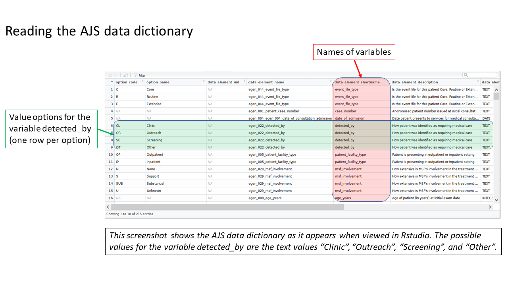
Clean the column names
These steps standardize how your column names are written, such as changing spaces and dots to underscores ("_"). Uncomment these lines of code in the prep_nonDHIS_data chunk.
First, make a copy of the dataframe linelist_raw but with a new name: linelist_cleaned.
Throughout the template you will modify and improve this linelist_cleaned dataframe. However, you can always return to the linelist_raw version for reference.
## make a copy of your orginal dataset and name it linelist_cleaned
linelist_cleaned <- linelist_rawSecond, use the clean_names() function from the {janitor} package to fix any column names with non-standard syntax.
linelist_cleaned <- janitor::clean_names(linelist_cleaned)Match your dataset’s columns to MSF’s AJS data dictionary
Standardized column names are required for this template to work smoothly, and the column names in the Am Timan linelist do not align with the names this template expects.
We need to change many column names, so we have developed a special function to help map our columns to the expected column names. The template also offers code that you can un-comment if there are only a few column names to change.
This is done by un-commenting and running a command found in near the end of the chunk prep_nonDHIS_data. We run the command msf_dict_rename_helper() with “AJS” to get the correct helper for this template.
msf_dict_rename_helper("AJS")Running this command copies a block of code text to our clipboard. Now, paste from your clipboard into the template in the bottom of the code chunk. For the AJS template, the code that is pasted will look like the code below. This code uses the function rename() to change column names.
Be sure to paste the AJS rename helper code into an existing R code chunk (e.g. the bottom of prep_nonDHIS_data), not into the white space of the RMarkdown script.

Complete the mapping of column names
The columns will be in alphabetical order, sorted by if the appear in the template (REQUIRED) or not (optional).
Some columns—such as lab results or symptoms—are listed as REQUIRED, but are not absolutely necessary for the template to run. If you do not have a column and are unsure if it’s necessary, do a search in the template to see if it’s marked as OPTIONAL in the code chunk.
To the right of each equals sign, and before each comma, type the exact names of the columns from your dataset that correspond to the expected MSF data dictionary columns on the left. The last un-commented line should not have a comma at the end.
Be sure to comment (#, ctrl + shift + c) out the lines of each data dictionary column in the helper that is not present in your dataset!
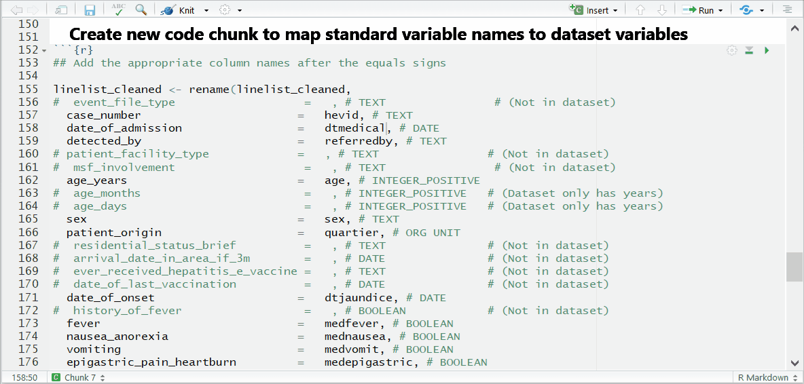
If you see this error:Error in is_symbol(expr) : argument "expr" is missing, with no default
then you likely forgot to comment (#) the line for a column you did not use.
And now you can see the result:

Below is the code for the column assignments used in this case study walk-through. You can copy or reference this when building your template for this vignette.
## Below are the column assignments used in this case study example
linelist_cleaned <- rename(linelist_cleaned,
# age_days = , # INTEGER_POSITIVE (Dataset only has years)
# age_months = , # INTEGER_POSITIVE (Dataset only has years)
age_years = age, # INTEGER_POSITIVE (REQUIRED)
bleeding = medbleeding, # BOOLEAN (REQUIRED)
case_number = hevid, # TEXT (REQUIRED)
chikungunya_onyongnyong = chik, # TEXT (REQUIRED)
# convulsions = , # BOOLEAN (Not in dataset)
date_of_consultation_admission = dtmedical, # DATE (REQUIRED)
# date_of_exit = , # DATE (Not in dataset)
date_of_onset = dtjaundice, # DATE (REQUIRED)
dengue = dengue, # TEXT (REQUIRED)
# dengue_rdt = , # TEXT (Not in dataset)
diarrhoea = meddiar, # BOOLEAN (REQUIRED)
# ebola_marburg = , # TEXT (Not in dataset)
epigastric_pain_heartburn = medepigastric, # BOOLEAN (REQUIRED)
exit_status = outcomehp, # TEXT (REQUIRED)
fever = medfever, # BOOLEAN (REQUIRED)
generalized_itch = meditching, # BOOLEAN (REQUIRED)
headache = medheadache, # BOOLEAN (REQUIRED)
hep_b_rdt = medhepb, # TEXT (REQUIRED)
hep_c_rdt = medhepc, # TEXT (REQUIRED)
hep_e_rdt = medhevrdt, # TEXT (REQUIRED)
# history_of_fever = , # BOOLEAN (Not in dataset)
joint_pains = medarthralgia, # BOOLEAN (REQUIRED)
# lassa_fever = , # TEXT (Not in dataset)
# malaria_blood_film = , # TEXT (Not in dataset)
malaria_rdt_at_admission = medmalrdt, # TEXT (REQUIRED)
mental_state = medmental, # BOOLEAN (REQUIRED)
nausea_anorexia = mednausea, # BOOLEAN (REQUIRED)
other_arthropod_transmitted_virus = arbovpcr, # TEXT (REQUIRED)
other_cases_in_hh = medothhhajs, # BOOLEAN (REQUIRED)
# other_pathogen = , # TEXT (Not in dataset)
other_symptoms = medother, # BOOLEAN (REQUIRED)
patient_facility_type = hospitalised, # TEXT (REQUIRED)
patient_origin = quartier, # ORG UNIT (REQUIRED)
sex = sex, # TEXT (REQUIRED)
test_hepatitis_a = medhavelisa, # TEXT (REQUIRED)
test_hepatitis_b = medhbvelisa, # TEXT (REQUIRED)
test_hepatitis_c = medhcvelisa, # TEXT (REQUIRED)
test_hepatitis_e_genotype = hevgenotype, # TEXT (REQUIRED)
# test_hepatitis_e_igg = , # TEXT (In same column as elisa result)
test_hepatitis_e_igm = hevrecent, # TEXT (REQUIRED)
test_hepatitis_e_virus = medhevelisa, # TEXT (REQUIRED)
# time_to_death = , # TEXT (Not in dataset)
# typhoid = , # TEXT (Not in dataset)
vomiting = medvomit, # BOOLEAN (REQUIRED)
# water_source = , # TEXT !(Split across many columns)
yellow_fever = yf, # TEXT (REQUIRED)
# arrival_date_in_area_if_3m = , # DATE (optional)
date_lab_sample_taken = medblooddt, # DATE (optional)
# date_of_last_vaccination = , # DATE (optional)
# delivery_event = , # TRUE_ONLY (optional)
detected_by = referredby, # TEXT (optional)
# event_file_type = , # TEXT (optional)
# ever_received_hepatitis_e_vaccine = , # TEXT (optional)
# foetus_alive_at_admission = , # TEXT (optional)
# lab_comments = , # TEXT (optional)
# msf_involvement = , # TEXT (optional)
patient_origin_free_text = block, # TEXT (optional)
pregnancy_outcome_at_exit = medppoutcome, # TEXT (optional)
pregnant = medpreg, # TEXT (optional)
# recent_travel = , # BOOLEAN (optional)
# residential_status_brief = , # TEXT (optional)
# traditional_medicine_details = , # TEXT (optional)
# traditional_medicines = , # BOOLEAN (optional)
treatment_facility_site = hpid, # TEXT (optional)
# treatment_location = , # ORGANISATION_UNIT (optional)
trimester = medpregtri # TEXT (optional)
)Provide population counts
The population estimates for regions and age groups are collected in order to calculate incidence, attack rates, and mortality rates. The template allows several ways to provide population estimates, but importantly, the data must be stored under specific column names. In your real-use case, the specific age groupings and region names in your data may differ from the examples, but the column names must follow the expected standard.
You can do one of the following:
- Import a spreadsheet file with the estimates in the correct format
- Use the function
gen_population()to derive the estimates from proportions based on globally accepted standards
- Use the function
gen_population()to directly enter counts
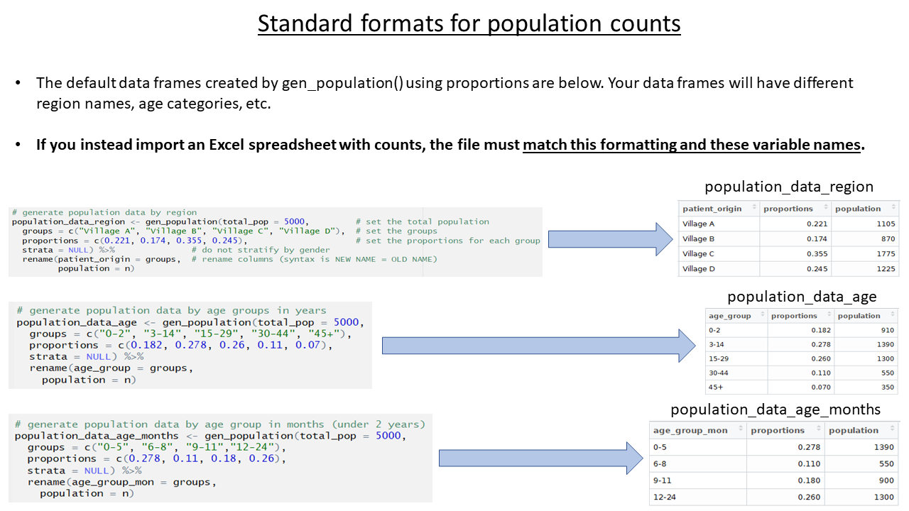
For this case study, we use a spreadsheet containing population data by quartier (stored inside the {sitrep} R package).
For this vignette
Because the vignette data are stored within the {sitrep} package, you can copy them to your RStudio project using the below commands. Look for the pop-up window (it may appear behind RStudio) and assign the destination as your RStudio project.
Note the name change from the default population_data, because the data we are importing is for regions (quartiers).
Note also that the columns names in the spreadsheet have already been edited to match the expected column names (“patient_origin” and “population”).
Import the population data into R
Now that the population data are saved in your RStudio project, you can import them into R using import(), as described in the Epidemiologist R Handbook’s Import and export chapter.
To import a specific sheet from an xlsx spreadsheet, use the which = argument as shown below. You can also use the na = argument to specify a value that should be converted to NA across the entire sheet (e.g. 99 or “Missing”, or "" which represents an empty space).
Th example command below imports an Excel spreadsheet called “AJS_AmTiman_population.xlsx” which is not password protected, and is stored in the RStudio project you are using for this analysis. The which = argument of import() specifies that the sheet “quartier” should be imported. You would edit this command as appropriate for your situation.
Note: If you saved the data into a subfolder of your RStudio project, you would need to also use the here() function, as described in the Epidemiologist R Handbook’s Import and export chapter.
# example code for importing an Excel file saved in RStudio project
# Import dataset from your RStudio project (top folder)
population_data_region <- import("AJS_AmTiman_population.xlsx", which = "quartier")
# Import from a "data" subfolder of the RStudio project
#population_data_region <- import(here("data", "AJS_AmTiman_population.xlsx"), which = "quartier")Before moving on, delete or comment (#) all the code lines in the chunk that create fake data or proportions for population_data_region, population_data_age, and population_data_age_months.
If you choose not to complete the population estimates section at all, delete or comment (#) all code in this section, and expect that later sections on attack and mortality rates will not produce output.
Provide laboratory testing data
In this example, laboratory testing data is already included in the linelist dataset. Therefore, there is no need to import a separate laboratory testing dataset.
In your personal use-case, if you have a separate laboratory dataset, use the alterate code provided in the template to import and then join that dataset to the linelist dataset. You can join them based on an ID or case number column that is present in both datasets. For more information about joins, see the Epidemiologist R Handbook chapter on Joining data.
Browse data
This code chunk can be used to explore your data, but remember to eventually comment out (#) these code lines if you do not want these outputs in your final report.
View the first 10 rows of the data
head(linelist_cleaned, n = 10)Wiew your whole dataset interactively. Remember that View needs to be written with a capital V.
View(linelist_cleaned)Overview of column types and contents
str(linelist_cleaned)Gives mean, median and max values of columns, gives counts for categorical columns, and also gives number of NAs.
summary(linelist_cleaned)View unique values contained in columns
unique(linelist_cleaned$sex)Standardize and clean data
Because the Am Timan linelist is not yet aligned with the MSF data dictionary and what the template expects, there are several data cleaning steps we must complete.
Re-code missing values from periods (.) to NA at import
Sometimes, missing values in the dataset are represented by a period (.), or by a number such as 99. This causes problems because R expects missing values to be coded as NA. For example, if missing dates are coded as a period (.), then R gives an error because the periods are considered character values that do not fit the expected YYYY-MM-DD date format.
If you encounter a problem like this, modify the general import command in the read_nonDHIS_data chunk of the template to include the argument na = within the import() command. Writing na = "." specifies a period as the value in the Excel sheet that R will consider to be “missing”. Alternatively, your scenario may require you to write na = 99 (no quotation marks, as 99 is a number). As the data are re-imported, all cells with that value are now changed to NA.
# An example of a revised import command (don't forget the comma between arguments!)
linelist_raw <- import("AJS_AmTiman.xlsx", which = "linelist", na = ".")Drop ineligible observations
The next code chunk in the script, remove_unused_data, drops observations with missing case_number or date_of_consultation_admission. Because the Am Timan dataset contains observations for patients seen in the community and at the hospital, these criteria may not be relevant.
We can check, using the code below, and see that of the 1447 observations, there are 0 missing case_number or dateentry, but 616 observations missing date_of_consultation_admission. These 616 community-identified cases are still of interest for our report, so we will not drop them.
# Print the number of observations missing case_number, dateentry, and date_of_consultation_admission
nrow(linelist_cleaned %>% filter(is.na(case_number)))
#> [1] 0
nrow(linelist_cleaned %>% filter(is.na(dateentry)))
#> [1] 0
nrow(linelist_cleaned %>% filter(is.na(date_of_consultation_admission)))
#> [1] 616Notice that the commands above returns the number of rows missing date_of_consultation_admission, but does not overwrite linelist_cleaned with anything, as there is not an assignment operator <-.
After viewing the above results, we must comment out (#) the two lines that filter() the linelist_cleaned dataset - we do not want to remove those 616 observations.
# linelist_cleaned <- linelist_cleaned %>%
# filter(!is.na(case_number) & !is.na(date_of_consultation_admission)) Standardise dates
In linelist_cleaned there are seven columns containing dates (dateentry, epiquestdate, date_of_consultation_admission, date_of_onset, date_lab_sample_taken, dthospitalisation, dtdeath).
Because the Am Timan dataset contains date columns not found in the data dictionary, we will comment out the first code lines related to DHIS-aligned data (those commands convert only date columns known to the MSF data dictionary).
Instead, we uncomment and use the commands applicable to non-DHIS2 data. You may see messages warning that a few date entries are not in the correct timeframe - this is ok and these entries will be addressed in the next step.
The command below uses the function parse_date() from the function {parsedate} to “guess” each individual date in the column - this approach can handle very messy data in which some dates are written as “17 October 2016” and others may be written as “2016-10-27”. Read more about the parse_date() function here.
## Non-DHIS2 data --------------------------------------------------------------
## Use this section if you did not have DHIS2 data.
## use the parse_date() function to make a first pass at date columns.
linelist_cleaned <- linelist_cleaned %>%
mutate(
across(.cols = matches("date|Date"),
.fns = ~ymd(parsedate::parse_date(.x))))The code above successfully converted many of our date columns (remember you can check a column’s class like class(linelist$date_of_onset).
class(linelist_cleaned$date_of_onset)
#> [1] "Date"However, this command did not detect the date columns named with “dt”, such as dtdeath and dthospitalization. We must add code to convert those columns manually:
# Individually convert column using the parse_date() function
linelist_cleaned <- linelist_cleaned %>%
mutate(dtdeath = ymd(parse_date(dtdeath)),
dthospitalisation = ymd(parse_date(dthospitalisation)))Next we uncomment and modify code to correct unrealistic dates. We have browsed our data and know that there are observations with date_of_onset outside the reasonable range:
# Check range of date_of_onset values, ignoring (removing) missing values
range(linelist_cleaned$date_of_onset, na.rm = TRUE)
#> [1] "1900-07-24" "2017-12-27"We convert dates outside the expected range (April 2016 to October 2017) to missing using case_when(). Note that when making the assignment on the right-hand side (RHS), wrap NA in as.Date() because all right-hand side values must be the same class (“Date” in this scenario).
As you modify this chunk for your own situation, remember that each left-hand side (LHS) of the ~ must be a logical statement (not just a value), and to include commas at the end of each case_when() line (except the last one). In addition, it is best to write case_when() lines from most specific at top to most general/catch-all at the bottom. You can read more about case_when() on this tidyverse site.
# Convert dates before April 2016 or after October 2017 to missing (NA)
linelist_cleaned <- linelist_cleaned %>%
mutate(date_of_onset = case_when(
date_of_onset < as.Date("2016-04-01") ~ as.Date(NA),
date_of_onset > as.Date("2017-10-01") ~ as.Date(NA),
TRUE ~ date_of_onset))
Check the range of dates again:
# Check range of date_of_onset values, ignoring (removing) missing values
range(linelist_cleaned$date_of_onset, na.rm = TRUE)
#> [1] "2016-06-09" "2017-04-22"We also must use the provided code to create a column called epiweek. Although there are already columns that give the epidemiological weeks of various data points, it is safer to calculate a new column ourselves, AND later code chunks rely on the column being named epiweek.
Create age groups
To create a column for age_group we must first clean the column age_years. If we look at the range of values in age_years, we see something strange:
# See the range of age_years values, removing (excluding) NA
range(linelist_cleaned$age_years, na.rm = TRUE)
#> [1] "0.08" "9"We know there are ages older than 9 years. So we check class(linelist_cleaned$age_years) and see that R is reading this column as class character, not numeric!
class(linelist_cleaned$age_years)
#> [1] "character"We must convert it by adding the following command to the script:
# Convert column age_years to numeric class
linelist_cleaned <- linelist_cleaned %>%
mutate(age_years = as.numeric(age_years))If we run the range() command again, we can see that the corrected range is 0.08 to 75.
# See the range of age_years values, removing (excluding) NA
range(linelist_cleaned$age_years, na.rm = TRUE)
#> [1] 0.08 75.00Then, the chunk contains three age-group commands marked “OPTIONAL”:
We do not want to use “add under 2 years to the age_years column” because it assumes that we already have a column
age_months, which we do not. Comment out (#) this code.We also do not need to use “change those who are above or below a certain age to NA”, because we already know our range of ages and do not have any outside an expected range. Comment out (#) this code.
We do want to use “create an age_months column from decimal years column”, as we do have decimal years. This command will create an age_months column that has a value if a patient is under 5 years. Uncomment and use this code.
# OPTIONAL: create an age_months column from decimal years column
linelist_cleaned <- linelist_cleaned %>%
mutate(age_months = case_when(
age_years < 5 ~ age_years * 12))Now we can create the columns age_group_mon and age_group.
First we use the code to create an age_group_mon column for children under 5 years based on age_months.
## create age group column for under 2 years based on months
linelist_cleaned <- linelist_cleaned %>%
mutate(age_group_mon = age_categories(
age_months,
breakers = c(0, 6, 9, 12, 23),
ceiling = TRUE))…and we use the similar code below to create age_group as groupings of the column age_years. The function age_categories() is used with its breakers = argument set to a vector c( ) of numbers: 0, 3, 15, 30, and 45. Thus, a 30-year old patient will be included in an age group named “30-44”. Read more about age_categories() by searching the Help pane.
## create an age group column by specifying categorical breaks
linelist_cleaned <- linelist_cleaned %>%
mutate(age_group = age_categories(
age_years,
breakers = c(0, 2, 15, 30, 45)))Finally, ensure that the remaining code in the create_age_group chunk is commented out (#).
Create and clean outcome columns
In the next chunk (create_vars) we can comment out/ignore the code that makes a new numeric column obs_days, because we do not have a date_of_exit column in our dataset.
While the template directs us to next create a DIED column based on the column exit_status containing the characters “Dead”, we must first clean our exit_status column, which is currently in French.
Add code that uses case_when() to assign new values in a new exit_status2 column, as in the code below. We do this by modifing code from just below in the template. The code uses the function case_when() to re-define the dataframe linelist_cleaned as itself, but mutated to create the new column exit_status2. The values in exit_status2 are based on the values in exit_status, such that when exist_status == "Décédé", the value in exit_status2 is “Dead”, and so on.
As you modify this chunk for your own situation, remember that each left-hand side (LHS) of the ~ must be a logical statement (not just a value), and to include commas at the end of each case_when() line (except the last one). It is best to write case_when() lines from most specific at top to most general/catch-all at bottom. You can read more about case_when() at this tidyverse site.
Another tip is that all the right-hand side (RHS) values must be the same class (either character, numeric, etc.). So, if your other RHS values are character and you want one particular RHS value to be missing, you cannot just write NA on the RHS. Instead you must use the special character version of NA, NA_character_. This may seem like unnecessary trouble, but it ensures consistency among your data in the long term.
# Tabulate to see all possible values of exit_status
linelist_cleaned %>% tabyl(exit_status, show_na = FALSE)
#> exit_status n percent
#> - 2 0.02739726
#> Décédé 14 0.19178082
#> Déchargé/Guéri 55 0.75342466
#> Echappé 2 0.02739726
# Create exit_status2 from values in exit_status
linelist_cleaned <- linelist_cleaned %>%
mutate(exit_status2 = case_when(
exit_status == "Décédé" ~ "Dead",
exit_status == "-" ~ NA_character_,
exit_status == "Echappé" ~ "Left",
exit_status == "Déchargé/Guéri" ~ "Discharged"
))
# Tabulate the NEW exit_status2 column to check correct assignment
# Tabulate to see all possible values of exit_status
linelist_cleaned %>% tabyl(exit_status2, show_na = FALSE)
#> exit_status2 n percent
#> Dead 14 0.19718310
#> Discharged 55 0.77464789
#> Left 2 0.02816901Now we can make the DIED column, which is referenced in later code chunks.
This command creates DIED as a logical (TRUE or FALSE) column, depending on whether each observation meets the criteria to the right of the assignment operator <-. Read more about the %in% operator on the R Basics chapter of the Epi R Handbook
However, we must modify the existing command to detect within the NEW column exit_status2, not exit_status.
## Note we are directing R to look within the NEW exit_status2 column
linelist_cleaned <- linelist_cleaned %>%
mutate(DIED = str_detect(exit_status2, "Dead"))
Re-code values in patient_facility_type
When we assigned our columns to match the data dictionary, we used the column hospitalisation as the column patient_facility_type. However, the values in that column do not match those expected by the template. In the data dictionary, patient_facility_type should have values of “Inpatient” or “Outpatient.” Currently, the values are “Oui” and “Non”. In later code chunks, analyses are restricted to observations where patient_facility_type == "Inpatient", thus, we must align the values to match the data dictionary.
To clean these values we uncomment and modify code also from the create_vars chunk, found under the heading “recode character columns” (the template example is of fixing incorrect spellings of village names).
Included below are extra steps before and after the case_when() command using tabyl() to verify the correct conversion of values. Remove these two commands after verifying, as otherwise their outputs will appear in the report.
# View all the values in patient_facility_type
linelist_cleaned %>% tabyl(patient_facility_type)
#> patient_facility_type n percent valid_percent
#> Non 699 0.48306842 0.8904459
#> Oui 86 0.05943331 0.1095541
#> <NA> 662 0.45749827 NA
# Convert the values
linelist_cleaned <- linelist_cleaned %>%
mutate(patient_facility_type = case_when(
patient_facility_type == "Oui" ~ "Inpatient",
patient_facility_type == "Non" ~ "Outpatient"
))
# Re-check that the values converted sucessfully
linelist_cleaned %>% tabyl(patient_facility_type)
#> patient_facility_type n percent valid_percent
#> Inpatient 86 0.05943331 0.1095541
#> Outpatient 699 0.48306842 0.8904459
#> <NA> 662 0.45749827 NARecode values in lab test columns
For later steps, we will need many of our testing columns to have the values “Positive” and “Negative” instead of “Pos” and “Neg”. We can uncomment and use this helper code to make that change. Some notes about this step:
- You may receive warnings about unknown levels in some columns - this is generally okay but check the changes visually to be sure with
View(linelist_cleaned).
- One column (
test_hepatitis_e_igm) has values 0 and 1 that we want to change to “Positive” and “Negative”. Thefct_recode()function expects character RHS inputs (within quotes) - so put “0” and “1” in quotes, as below, and confirm the change has occurred as expected.
- One column (
test_hepatitis_b) has a value recorded as “Weakly pos”. For the purposes of this exercise we re-code this to “Positive”.
## sometimes, coding is inconsistent across columns -- for example, "Yes" / "No"
## may be coded as Y, y, yes, 1 / N, n, no, 0. You can change them all at once!
## Create a list of the columns you want to change, and run the following.
## You may need to edit this code if options are different in your data.
# # create list of columns
change_test_vars <- c("hep_e_rdt", "hep_c_rdt", "hep_b_rdt", "test_hepatitis_a", "test_hepatitis_b", "test_hepatitis_c", "malaria_rdt_at_admission", "test_hepatitis_e_genotype", "test_hepatitis_e_igm", "test_hepatitis_e_virus", "hevpcr", "other_arthropod_transmitted_virus")
# standardize values
linelist_cleaned <- linelist_cleaned %>%
mutate(
across(
.cols = all_of(change_test_vars),
.fns = ~forcats::fct_recode(
.x,
Positive = "Pos",
Positive = "pos",
Positive = "yes",
Positive = "Yes",
Positive = "Weakly pos",
Positive = "1",
Negative = "Neg",
Negative = "neg",
Negative = "no",
Negative = "No",
Negative = "0")))Lastly for the chunk create_vars we must create a case definition column. In this use of case_when(), the last line left-hand side (LHS) is TRUE, which serves as a catch-all for any other possible values that have not yet met the criteria of the earlier case_when() lines.
Note how this code checks the column hep_e_rdt for “Positive”. The earlier cleaning steps converting hep_e_rdt values from “Pos” to “Positive” were necessary for this case definition to properly apply.
In addition we need to change the value looked for in other_cases_in_hh from “Yes” to “Oui”.
# You MUST modify this section to match your case definition. The below
# uses positive RDT for Confirmed and epi link only for Probable.
linelist_cleaned <- linelist_cleaned %>%
mutate(case_def = case_when(
is.na(hep_e_rdt) & is.na(other_cases_in_hh) ~ NA_character_,
hep_e_rdt == "Positive" ~ "Confirmed",
hep_e_rdt != "Positive" & other_cases_in_hh == "Oui" ~ "Probable",
TRUE ~ "Suspected"
))Factor columns
Factor columns require specialized functions to manipulate (see the Epidemiologist R Handbook chapter Factors). The one factor column we should clean now is sex, with the following code:
linelist_cleaned <- linelist_cleaned %>%
mutate(sex = fct_recode(sex, NULL = "Unknown/unspecified"))And we can verify the unique values in column sex with a quick table:
linelist_cleaned %>%
tabyl(sex)
#> sex n percent
#> F 719 0.4968901
#> M 728 0.5031099Comment out (#) the rest of the factor_vars chunk, such as the code to change the order of levels in categorical columns. The Am Timan dataset does not include a column time_to_death and we do not need to change the order of any categorical columns.
Cleaning patient origin
We must add one additional cleaning step necessary for this dataset.
The column patient_origin (originally the column quartier in the raw dataset) is referenced in the place analyses chunks, for example when calculating attack rates by region. In those steps, the column patient_origin in linelist_cleaned is joined to the column patient_origin of the data frame population_data_region (which was imported in the population and lab data steps).
However, the place names in population_data_region are ALL CAPITAL LETTERS. This is not true in linelist_cleaned - so the join will not register any matches. The easiest way to solve this problem is to redefine the linelist_cleaned column into all capital letters as well, using the base R function toupper(), which means “to upper case”:
linelist_cleaned <- linelist_cleaned %>%
mutate(patient_origin = toupper(patient_origin))Gather common columns for later analysis
These columns names are stored in vectors that are created using the function c(). These vectors of names will be referenced in later code chunks. This way if you want to run the same function over these columns you can simply use the named vector rather than typing out each column individually.
The default template code creates two vectors - one for symptom columns (SYMPTOMS) and one for laboratory testing columns (LABS).
# vectors of column names ----------------------------------------------------
# create a grouping of all symptoms
SYMPTOMS <- c("generalized_itch",
# "history_of_fever",
"fever",
"joint_pains",
"epigastric_pain_heartburn",
"nausea_anorexia",
"vomiting",
"diarrhoea",
"bleeding",
"headache",
"mental_state",
# "convulsions",
"other_symptoms"
)
# create a grouping of all lab tests
LABS <- c("hep_b_rdt",
"hep_c_rdt",
"hep_e_rdt",
"test_hepatitis_a",
"test_hepatitis_b",
"test_hepatitis_c",
# "test_hepatitis_e_igg",
"test_hepatitis_e_igm" ,
"test_hepatitis_e_genotype",
"test_hepatitis_e_virus",
"malaria_rdt_at_admission",
# "malaria_blood_film",
"dengue",
# "dengue_rdt",
"yellow_fever",
# "typhoid",
"chikungunya_onyongnyong",
# "ebola_marburg",
# "lassa_fever",
"other_arthropod_transmitted_virus"
# "other_pathogen"
)Final setup for report
The next code chunk, report_setup, defines important date-related parameters used to produce the report, and filters to remove any observations with date of onset after the reporting_week (reporting_week is an object defined at the beginning of the script).
The second command in this chunk (shown below) uses filter() to remove observations later than the end of the pre-defined reporting_week. However, filter() also removes observations with missing date_of_consultation_admission. To avoid this we must can add | is.na(date_of_onset) into the filter (This is read as: “keep observations where date_of_consultation_admission is less than or equal to obs_end, OR, if date_of_consultation_admission is missing”).
Export if desired
And finally, if desired you can export the cleaned dataset for other purposes.
The command export() is also from the package {rio}.
First, the object that you want to export is named (linelist_cleaned).
Then, the function str_glue() creates the name for the new file by combining “AmTiman_linelist_cleaned_” with the current date and finally the extention “.xlsx”. Don’t be confused - this is equivalent of writing rio::export(linelist_cleaned, "AmTiman_linelist_cleaned_2019-08-24.xlsx"), but using str_glue() and Sys.Date() means the current date will always be used automatically.
## OPTIONAL: save your cleaned dataset!
## put the current date in the name so you know!
rio::export(linelist_cleaned, str_glue("AmTiman_linelist_cleaned_{Sys.Date()}.xlsx"))Analysis
After cleaning the data, there are three sections of the template that produce tabular, graphic, and cartographic (map) analysis outputs.
Person
This first section produces descriptive analyses about the patient’s demographics and attack rates.
Demographic Tables:
The person analysis section begins with a couple sentences that contain in-line code - code embedded in normal RMarkdown text (not within an R code chunk). The second sentence in-line code inserts the number of males and females by counting the observations with “Male” and “Female” in the variable sex. Because our dataset’s variable sex contains M and F instead, we must modify this in-line code (or modify our variable) so the fmt_count() function is searching for the correct terms.
From the start of the outbreak up until 2018 W17 there were a
total of 614 cases. There were
304 (49.5%) females and
310 (50.5%) males.
The first demographic table presents patients by their age group (the table’s rows) and their relationship with the case definition (the table’s columns). This chunk uses pipes to link many different functions together and produce a table (%>% is the pipe operator - see the R Basics chapter of the Epidemiologist R Handbook:
-
select()keeps only the columns of interest -
mutate()converts any instances ofNAin thecase_defcolumn to the word “Missing”, so the table’s presentation is more clean. Note this change only applies in this table, not in the underlying dataset.
-
tbl_summary()creates a summary table by age group with counts and percentages, with columns for eachcase_defvalue.
-
add_overall()is a function from {gtsummary} that adds overall totals to the table
-
bold_labels()is from {gtsummary} and makes the variable names bold.
-
as_flex_table()is from the {flextable} package, which allows more detailed editing of the table presentation
-
bold()makes the header bold
-
set_table_properties()aligns the table to the maximum width of the word document report.
linelist_cleaned %>%
## only keep variables of interest
select(age_group, case_def) %>%
## make NAs show up as "Missing" (so they are included in counts)
mutate(case_def = fct_explicit_na(case_def, "Missing")) %>%
## create a table with counts/percentages by column
tbl_summary(by = case_def,
percent = "column",
label = list(age_group = "Age group")) %>%
## add totals
add_overall() %>%
## make variable names bold
bold_labels() %>%
# change to flextable format
as_flex_table() %>%
# make header text bold (using {flextable})
bold(part = "header") %>%
# make your table fit to the maximum width of the word document
set_table_properties(layout = "autofit")Characteristic |
Overall, N = 6141 |
Confirmed, N = 701 |
Probable, N = 41 |
Suspected, N = 5121 |
Missing, N = 281 |
Age group |
|||||
0-1 |
17 (2.8%) |
2 (2.9%) |
0 (0%) |
15 (2.9%) |
0 (0%) |
2-14 |
265 (43%) |
24 (34%) |
1 (25%) |
230 (45%) |
10 (36%) |
15-29 |
216 (35%) |
29 (41%) |
1 (25%) |
173 (34%) |
13 (46%) |
30-44 |
92 (15%) |
12 (17%) |
2 (50%) |
76 (15%) |
2 (7.1%) |
45+ |
24 (3.9%) |
3 (4.3%) |
0 (0%) |
18 (3.5%) |
3 (11%) |
1n (%) | |||||
You can change the argument by = to refer to any number of columns (in this next example, by sex).
linelist_cleaned %>%
select(age_group, sex) %>%
mutate(sex = fct_explicit_na(sex, "Missing")) %>%
tbl_summary(by = sex,
percent = "column",
label = list(age_group = "Age group")) %>%
add_overall() %>%
## make variable names bold
bold_labels() %>%
# change to flextable format
as_flex_table() %>%
# make header text bold (using {flextable})
bold(part = "header") %>%
# make your table fit to the maximum width of the word document
set_table_properties(layout = "autofit")Characteristic |
Overall, N = 6141 |
F, N = 3041 |
M, N = 3101 |
Age group |
|||
0-1 |
17 (2.8%) |
8 (2.6%) |
9 (2.9%) |
2-14 |
265 (43%) |
91 (30%) |
174 (56%) |
15-29 |
216 (35%) |
146 (48%) |
70 (23%) |
30-44 |
92 (15%) |
52 (17%) |
40 (13%) |
45+ |
24 (3.9%) |
7 (2.3%) |
17 (5.5%) |
1n (%) | |||
Outside of the R code chunk, note the in-line code that gives the counts and percents of rows missing sex and age_group.
Age pyramids
To print an age pyramid in your report, use the code below. A few things to note:
- The column for
split_by =should have two non-missing value options (e.g. Male or Female, Oui or Non, etc. Three will create a messy output.)
- The variable names work with or without quotation marks
- The dashed lines in the bars are the midpoint of the un-stratified age group
- You can adjust the position of the legend by replacing
legend.position = "bottom"with “top”, “left”, or “right”
- Read more by searching “age_pyramid” in the Help tab of the lower-right RStudio pane
You can make this a pyramid of months by supplying age_group_mon to the age_group = argument.
# plot age pyramid by sex
age_pyramid(linelist_cleaned,
age_group = "age_group",
split_by = "sex") +
labs(y = "Cases (n)", x = "Age group") + # change axis labels
theme(legend.position = "bottom", # move legend to bottom
legend.title = element_blank(), # remove title
text = element_text(size = 18) # change text size
)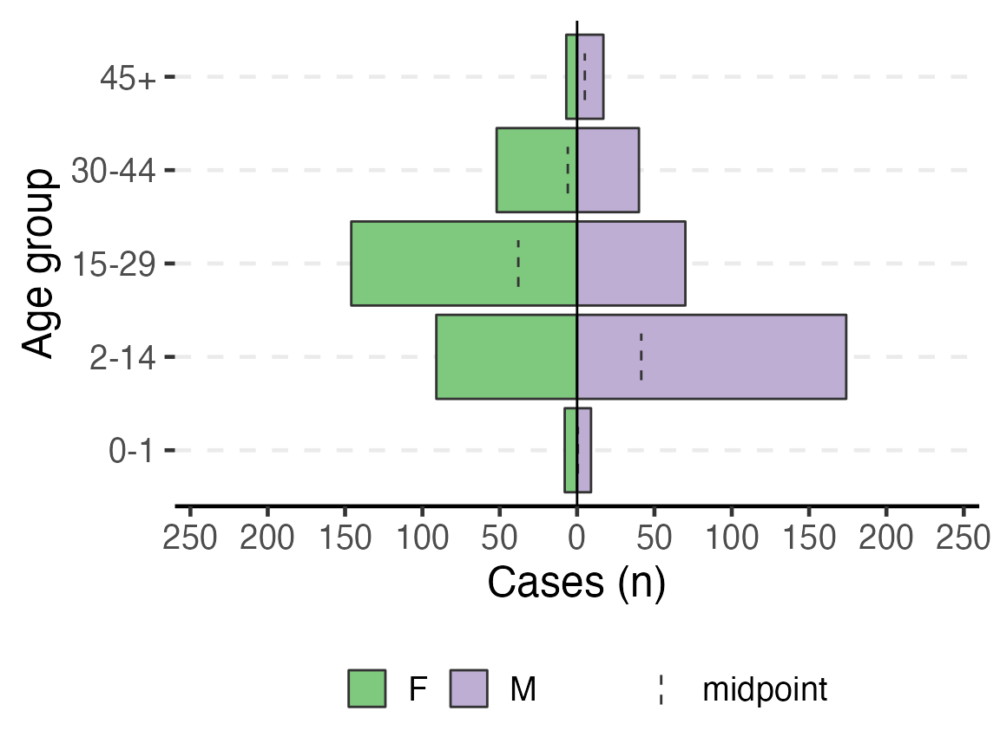
To have an age pyramid of patients under 2 by month age groups, it is best to add a filter() step to the beginning of the code chunk, as shown below. This selects for linelist_cleaned observations that meet the specified critera and passes that subsetted dataset through the “pipes” to age_pyramid(). If this filter() step is not added, you will see that the largest pyramid bars are of “missing”. These are the patients old enough to not have a months age group.
If you add this filtering step, you must also modify age_pyramid() by removing its first argument linelist_cleaned,. The dataset is already given to the command in the filter() and is passed to age_pyramid() via piping.
Note that the filter step does not drop any observations from the linelist_cleaned object itself. Because the filter is not being assigned (<-) to over-write linelist_cleaned, this filter is only temporarily applied for the purpose of producing the age pyramid.
# plot age pyramid by month groups, for observations under 2 years
linelist_cleaned %>%
filter(age_years <= 2) %>%
age_pyramid(age_group = "age_group_mon",
split_by = "sex") +
# stack_by = "case_def") +
labs(y = "Cases (n)", x = "Age group (months)") + # change axis labels (nb. x/y flip)
theme(legend.position = "bottom", # move legend to bottom
legend.title = element_blank(), # remove title
text = element_text(size = 18) # change text size
)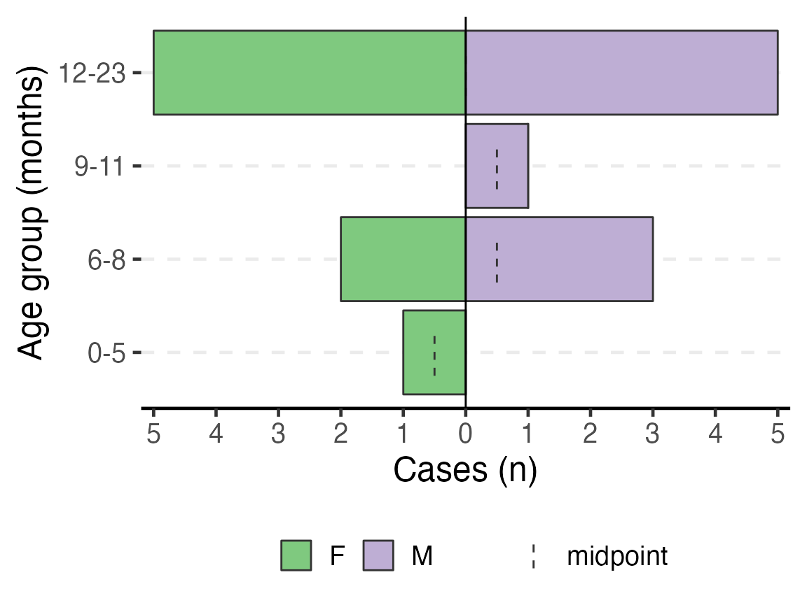
Inpatient statistics
The text following the age pyramids uses in-line code to describe the distribution of outpatient and inpatient observations, and descriptive statistics of the length of stay for inpatients. The Am Timan dataset does not have length of stay, so it is best to delete those related sentences related to obs_days for the final report.
Symptom and lab descriptive tables
This next code also uses the tbl_summary() function to create descriptive tables of all the variables that were included in the SYMPTOMS variable list.
- In the
tbl_summary()function,SYMPTOMS(the value supplied to the second argument) is an object we defined in data cleaning that is a list of variables to tabulate. If this code produces an error about an “Unknown column”, ensure that the variables in the objectSYMPTOMSare all present in your dataset (and spelled correctly). - Also in
tbl_summary(), the argumentkeep =must represent the character value to be counted for the the table. As these Am Timan variables are still in French, we changekeep = "Yes"tokeep = "Oui".
- The
mutate()function is aesthetically changing variable names with underscores to spaces.
# get counts and proportions for all variables named in SYMPTOMS
linelist_cleaned %>%
select(all_of(SYMPTOMS)) %>%
tbl_summary() %>%
# fix the way symptoms are displayed
# str_replace_all switches underscore for space in the variable column
# str_to_sentence makes the first letter capital, and all others lowercase
modify_table_body(
~.x %>%
mutate(label = str_to_sentence(str_replace_all(label, "_", " ")))
) %>%
# change to flextable format
as_flex_table() %>%
# make header text bold (using {flextable})
bold(part = "header") %>%
# make your table fit to the maximum width of the word document
set_table_properties(layout = "autofit")Characteristic |
N = 6141 |
Generalized itch |
|
Non |
186 (31%) |
Oui |
404 (68%) |
Oui |
2 (0.3%) |
Unknown |
22 |
Fever |
|
Non |
73 (12%) |
Oui |
521 (88%) |
Unknown |
20 |
Joint pains |
|
Non |
410 (70%) |
Oui |
176 (30%) |
Oui |
1 (0.2%) |
U |
2 (0.3%) |
Unknown |
25 |
Epigastric pain heartburn |
|
Non |
215 (36%) |
Oui |
376 (64%) |
U |
1 (0.2%) |
Unknown |
22 |
Nausea anorexia |
|
Non |
248 (42%) |
Oui |
346 (58%) |
Unknown |
20 |
Vomiting |
|
Non |
232 (39%) |
Oui |
362 (61%) |
Unknown |
20 |
Diarrhoea |
|
Non |
506 (86%) |
Non |
3 (0.5%) |
Oui |
81 (14%) |
Unknown |
24 |
Bleeding |
|
Non |
551 (93%) |
Oui |
39 (6.6%) |
Unknown |
24 |
Headache |
|
Non |
102 (17%) |
Oui |
489 (83%) |
Unknown |
23 |
Mental state |
|
Coma |
2 (0.4%) |
Confus/somnolent |
11 (2.0%) |
Normal |
544 (98%) |
Unknown |
57 |
Other symptoms |
|
- |
3 (7.1%) |
Agiter |
1 (2.4%) |
Ajiter |
2 (4.8%) |
Convulsion+fever |
1 (2.4%) |
Demangeson |
1 (2.4%) |
Drepa |
1 (2.4%) |
Fatigue |
16 (38%) |
Ictere neonat |
1 (2.4%) |
Non |
12 (29%) |
Paludisme |
4 (9.5%) |
Unknown |
572 |
1n (%) | |
These tables may be large and unwieldy at first, until you implement further data cleaning steps. Using fct_recode() to convert unexpected or mistakenly typed values as desired. For example, “OuI” should be recoded as “Oui” and “U” as “Unknown”.
The code for making a table with the LAB columns is very similar:
# get counts and proportions for all variables named in SYMPTOMS
linelist_cleaned %>%
select(all_of(LABS)) %>%
tbl_summary() %>%
# fix the way symptoms are displayed
# str_replace_all switches underscore for space in the variable column
# str_to_sentence makes the first letter capital, and all others lowercase
modify_table_body(
~.x %>%
mutate(label = str_to_sentence(str_replace_all(label, "_", " ")))
) %>%
# change to flextable format
as_flex_table() %>%
# make header text bold (using {flextable})
bold(part = "header") %>%
# make your table fit to the maximum width of the word document
set_table_properties(layout = "autofit")Characteristic |
N = 6141 |
Hep b rdt |
|
Negative |
149 (91%) |
Positive |
14 (8.6%) |
Unknown |
451 |
Hep c rdt |
|
Negative |
160 (99%) |
Positive |
2 (1.2%) |
Unknown |
452 |
Hep e rdt |
|
Negative |
97 (58%) |
Positive |
70 (42%) |
Unknown |
447 |
Test hepatitis a |
|
Negative |
16 (100%) |
Unknown |
598 |
Test hepatitis b |
|
Negative |
15 (94%) |
Positive |
1 (6.2%) |
Unknown |
598 |
Test hepatitis c |
|
Negative |
16 (100%) |
Unknown |
598 |
Test hepatitis e igm |
|
Negative |
15 (32%) |
Positive |
32 (68%) |
Unknown |
567 |
Test hepatitis e genotype |
|
Positive |
2 (100%) |
Unknown |
612 |
Test hepatitis e virus |
|
Igg-/igm- |
5 (11%) |
Igg-/igm+ |
10 (21%) |
Igg+/igm- |
4 (8.5%) |
Igg+/igm+ |
21 (45%) |
Negative |
6 (13%) |
Positive |
1 (2.1%) |
Unknown |
567 |
Malaria rdt at admission |
|
Negative |
108 (60%) |
Positive |
71 (40%) |
Unknown |
435 |
Dengue |
|
Igg-/igm- |
6 (40%) |
Igg+/igm- |
8 (53%) |
Igg±/igm- |
1 (6.7%) |
Unknown |
599 |
Yellow fever |
|
Igg-/igm- |
11 (73%) |
Igg+/igm- |
4 (27%) |
Unknown |
599 |
Chikungunya onyongnyong |
|
Igg-/igm- |
13 (87%) |
Igg+/igm- |
2 (13%) |
Unknown |
599 |
Other arthropod transmitted virus |
|
Negative |
15 (100%) |
Unknown |
599 |
1n (%) | |
The step in data cleaning where we converted 0, 1, “yes”, “pos”, “neg”, etc. to standardized “Positive” and “Negative” was crucial towards making this table readable.
Case Fatality Ratio (CFR)
The opening text of this chunk with in-line code must be edited to match our Am Timan data. The second in-line code references the variable exit_status - this must now reference the variable exit_status2. Also, we do not have “Dead on Arrival” recorded in our dataset, so that part of the sentence should be deleted.
Likewise, the code section on time-to-death does not apply to our dataset and should be deleted.
Overall CFR is produced with the code below. Note the following:
- This code requires the variable
patient_facility_type, that it has a value “Inpatient”, and theDIEDvariable.
- A filter is applied that restricts this table to Inpatient observations only.
- The function
add_cfr()from the package {epitabulate} modifies the table to include the CFR.
# use arguments from above to produce overal CFR
linelist_cleaned %>%
filter(patient_facility_type == "Inpatient") %>%
select(DIED) %>%
gtsummary::tbl_summary(
statistic = everything() ~ "{N}",
label = DIED ~ "Inpatients"
) %>%
modify_header(stat_0 = "Cases (N)") %>%
# Use wrapper function to calculate cfr
epitabulate::add_cfr(deaths_var = "DIED") %>%
## make variable names bold
bold_labels() %>%
# change to flextable format
as_flex_table() %>%
# make header text bold (using {flextable})
bold(part = "header") %>%
# make your table fit to the maximum width of the word document
set_table_properties(layout = "autofit")Characteristic |
Cases (N)1 |
Deaths |
CFR (%) |
95%CI |
Inpatients |
45 |
8 |
17.78 |
(9.29--31.33) |
Unknown |
14 |
|||
1N | ||||
The next code adds the include = "sex" argument to tbl_summary() (which stratifies the CFR by sex).
linelist_cleaned %>%
filter(patient_facility_type == "Inpatient") %>%
select(DIED, sex) %>%
mutate(sex = forcats::fct_explicit_na(sex, "Missing")) %>%
gtsummary::tbl_summary(
include = sex,
statistic = sex ~ "{n}",
label = sex ~ "Gender") %>%
modify_header(stat_0 = "Cases (N)") %>%
# Use wrapper function to calculate cfr
epitabulate::add_cfr(deaths_var = "DIED") %>%
# make variable names bold
bold_labels() %>%
# change to flextable format
as_flex_table() %>%
# make header text bold (using {flextable})
bold(part = "header") %>%
# make your table fit to the maximum width of the word document
set_table_properties(layout = "autofit")Characteristic |
Cases (N)1 |
Deaths |
CFR (%) |
95%CI |
Gender |
||||
F |
36 |
6 |
23.08 |
(11.03--42.05) |
M |
23 |
2 |
10.53 |
(2.94--31.39) |
1n | ||||
This table shows the CFR by age group. Note how the include = argument is now assigned to age_group.
linelist_cleaned %>%
filter(patient_facility_type == "Inpatient") %>%
select(DIED, age_group) %>%
gtsummary::tbl_summary(
include = age_group,
statistic = age_group ~ "{n}",
missing = "no",
label = age_group ~ "Age group"
) %>%
modify_header(stat_0 = "Cases (N)") %>%
# Use wrapper function to calculate cfr
add_cfr(deaths_var = "DIED") %>%
# make variable names bold
bold_labels() %>%
# change to flextable format
as_flex_table() %>%
# make header text bold (using {flextable})
bold(part = "header") %>%
# make your table fit to the maximum width of the word document
set_table_properties(layout = "autofit")Characteristic |
Cases (N)1 |
Deaths |
CFR (%) |
95%CI |
Age group |
||||
0-1 |
5 |
2 |
40.00 |
(11.76--76.93) |
2-14 |
14 |
1 |
9.09 |
(1.62--37.74) |
15-29 |
23 |
2 |
11.76 |
(3.29--34.34) |
30-44 |
15 |
2 |
20.00 |
(5.67--50.98) |
45+ |
2 |
1 |
50.00 |
(9.45--90.55) |
1n | ||||
The commented code below examines CFR by case definition. Note that this is dependent upon our working case_def variable.
# Use if you have enough confirmed cases for comparative analysis
linelist_cleaned %>%
filter(patient_facility_type == "Inpatient") %>%
select(DIED, case_def) %>%
gtsummary::tbl_summary(
include = case_def,
statistic = case_def ~ "{n}",
missing = "no",
label = case_def ~ "Case definition"
) %>%
modify_header(stat_0 = "Cases (N)") %>%
# Use wrapper function to calculate cfr
add_cfr(deaths_var = "DIED") %>%
# make variable names bold
bold_labels() %>%
# change to flextable format
as_flex_table() %>%
# make header text bold (using {flextable})
bold(part = "header") %>%
# make your table fit to the maximum width of the word document
set_table_properties(layout = "autofit")Characteristic |
Cases (N)1 |
Deaths |
CFR (%) |
95%CI |
Case definition |
||||
Confirmed |
33 |
5 |
20.83 |
(9.24--40.47) |
Suspected |
26 |
3 |
14.29 |
(4.98--34.64) |
1n | ||||
Attack Rate
To use the attack rate section, we need to create an object population from the sum of population counts in the population figures. Because we only imported region-based population counts, we must change this command to reflect that we do not have population_data_age, but rather population_data_region.
# OLD command from template
# population <- sum(population_data_age$population)Running the correct command and printing the value of population, we see that the sum population across regions is estimated to be 62336.
# CORRECTED command for Am Timan exercise
population <- sum(population_data_region$population)
population
#> [1] 62336The first line of code below creates a multi-part object ar with the number of cases, population, attack rate per 10,000, and lower and upper confidence intervals (you can run just this line to verify yourself). This function comes from our package {sitrep}. The subsequent commands alter the aesthetics of to produce a neat table with appropriate column names.
# calculate the attack rate information and store them in object "ar""
ar <- attack_rate(nrow(linelist_cleaned), population, multiplier = 10000)
# print the table
ar %>%
merge_ci_df(e = 3, digits = 1) %>% # merge the lower and upper CI into one column
rename("Cases (n)" = cases,
"Population" = population,
"AR (per 10,000)" = ar,
"95%CI" = ci) %>%
# produce styled output table with auto-adjusted column widths with {flextable}
qflextable() %>%
# make header text bold (using {flextable})
bold(part = "header") %>%
# make your table fit to the maximum width of the word document
set_table_properties(layout = "autofit") %>%
## set to only show 1 decimal place
colformat_double(digits = 1)Cases (n) |
Population |
AR (per 10,000) |
95%CI |
614 |
62,336.0 |
98.5 |
(91.0--106.6) |
We are unable to calculate the attack rate by age group, because we do not have population counts for each age group. Comment out (#) this code.
Mortality attributable to AJS is also not appropriate for this example. Comment out (#) the 4 related code chunks.
Time
The next section of the template produces analyses and outputs related to time, such as epidemic curves.
The first in-line code sentence clearly states how many cases are missing date of onset, as this is important to be able to correctly interpret the epidemic curve.
Epidemic curve
The basic_curve epidemic curve is achieved using ggplot() and geom_bar() on the case linelist.
## make plot
basic_curve <- linelist_cleaned %>%
filter(!is.na(epiweek_date)) %>%
## plot those not missing using the date variable
ggplot(aes(x = epiweek_date)) +
## plot as a bar
geom_bar(width = 7,
fill = "red",
colour = "black") +
## align plot with bottom of plot
scale_y_continuous(expand = c(0, NA)) +
## control x-axis breaks and display
scale_x_date(
breaks = all_weeks_date,
labels = all_weeks) +
## use pre-defined labels
epicurve_labels +
## use pre-defined theme (design) settings
epicurve_theme
# show your plot (stored for later use)
basic_curve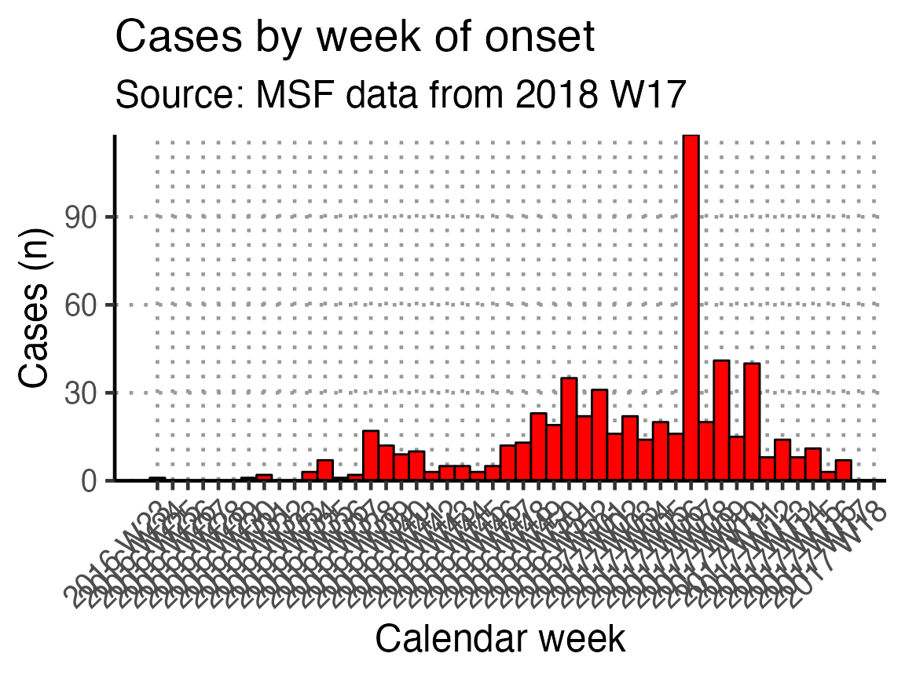
This x-axis is difficult to read with every week displayed. To increase readability we can uncomment and use the helper code at the bottom of that code chunk. This modifies the already-defined basic_curve object (with a +) to specify that the x-axis shows only a specified number of breaks/dates (in this case 6). Note: A warning that a scale for x is being replaced is okay.
The data are still shown by week - it is only the labels on the scale that have changed.
# Modifies basic_curve to show only 6 breaks in the x-axis
basic_curve + scale_x_date(breaks = "3 months", date_labels = "%b %Y")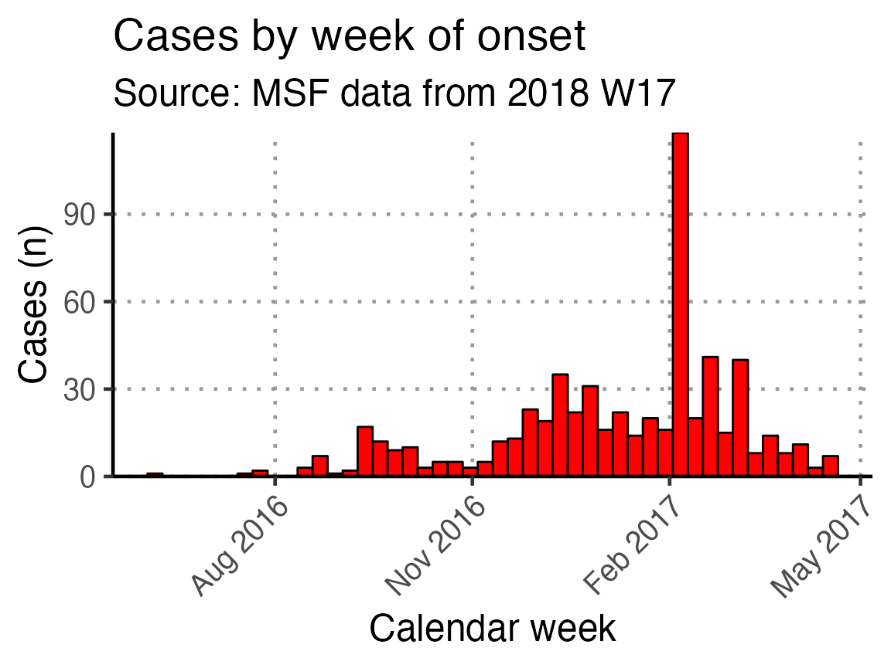
An in-line code sentence then calculates and prints the week of the peak of the outbreak.
Moving average
The next code chunk uses the {slider} function to calculate a moving average (mean) of number of cases in the two weeks prior, plotted as a line on top of the epidemic curve. You can adjust the window in the top line of this chunk (default set to 14 days).
## define the width of the moving average window here
moving_window_days <- 14
## calculates the moving average using counts by epiweek
moving_avg <- linelist_cleaned %>%
## count cases by epiweek
count(epiweek_date) %>%
## create column with sliding window for day and window prior
mutate(indexed_window = slider::slide_index_dbl(
n, # calculate on new_cases
.i = epiweek_date, # indexed with epiweek_date
.f = ~mean(.x, na.rm = TRUE), # function is mean() with missing values removed
.before = days(moving_window_days - 1)))
## create plot
moving_plot <- basic_curve +
geom_line(data = moving_avg,
mapping = aes(x = epiweek_date, y = indexed_window)) +
# adjust title and subtitle for this particular plot
labs(title = str_glue("Cases by date of onset"),
subtitle = str_glue("{moving_window_days}-day moving average
Source: MSF data from {reporting_week}"))
# show your plot (stored for later use)
moving_plot + scale_x_date(breaks = "3 months", date_labels = "%b %Y")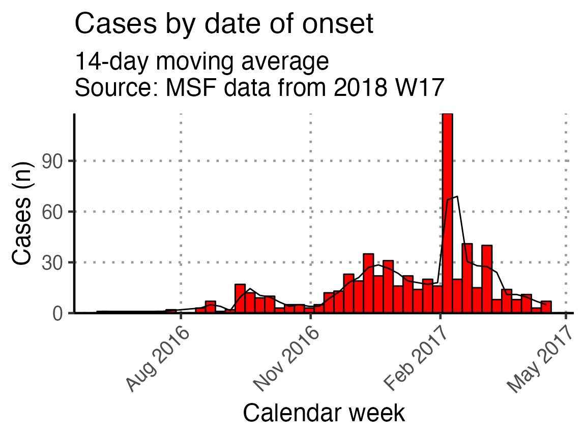
Biweekly epicurve
A biweekly epidemic curve can be produces using the next code chunk. In the first step, the linelist is aggregated into weekly counts and then a biweekly sum is created using {slider}. Finally, In the geom_bar() function, the width = argument is set to equal 14 (days).
## calculates the moving sum using counts by epiweek
moving_sum <- linelist_cleaned %>%
## count cases by date of onset
count(epiweek_date) %>%
mutate(biweekly = slide_sum(x = n,
after = 1,
step = 2)) %>%
filter(!is.na(biweekly))
ggplot(moving_sum, aes(x = epiweek_date, y = biweekly)) +
## plot as a bar
geom_bar(
## use the count we calculated above
stat = "identity",
## make each bar two weeks wide
width = 14,
fill = "red",
colour = "black") +
## align plot with bottom of plot
scale_y_continuous(expand = c(0, NA)) +
## control x-axis breaks and display
scale_x_date(
breaks = all_weeks_date,
labels = all_weeks) +
## use pre-defined labels
epicurve_labels +
## use pre-defined theme (design) settings
epicurve_theme +
scale_x_date(breaks = "3 months", date_labels = "%b %Y")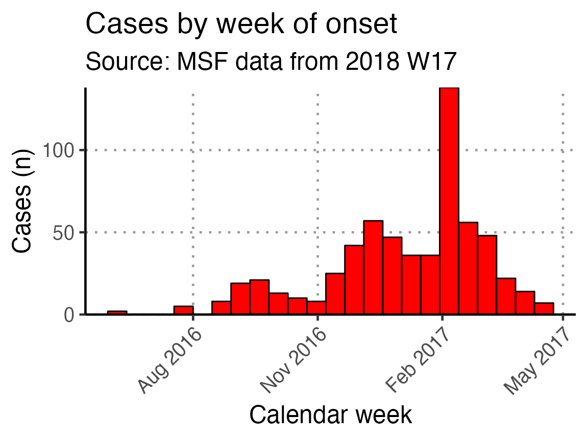
Using the next code chunk, you can group the data in the epidemic curve by the values in sex, thus producing a “stacked” epidemic curve. You can also change out sex for another column.
# get counts by gender
linelist_cleaned %>%
filter(!is.na(epiweek_date)) %>%
## plot those not missing using the date variable
ggplot(aes(x = epiweek_date, fill = fct_rev(fct_explicit_na(sex)))) +
## plot as a bar
geom_bar(width = 7,
colour = "black") +
# align plot with bottom of plot
scale_y_continuous(expand = c(0, NA)) +
# control x-axis breaks and display
scale_x_date(
breaks = all_weeks_date,
labels = all_weeks) +
# use pre-defined labels
epicurve_labels +
# use pre-defined theme (design) settings
epicurve_theme +
scale_x_date(breaks = "3 months", date_labels = "%b %Y")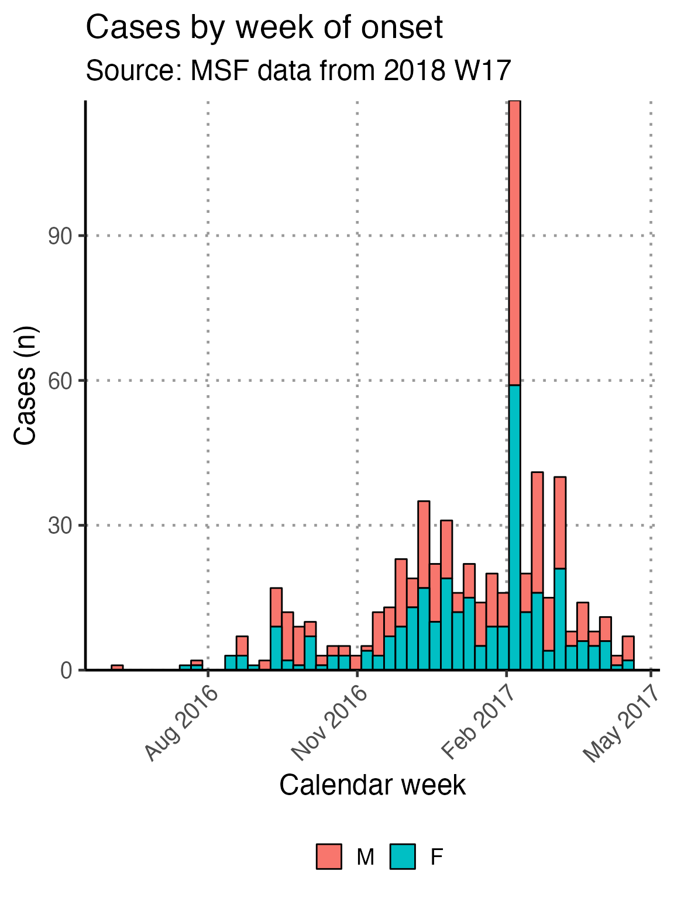
Such as by, case_def:
linelist_cleaned %>%
filter(!is.na(epiweek_date)) %>%
## plot those not missing using the date variable
ggplot(aes(x = epiweek_date, fill = fct_rev(fct_explicit_na(case_def)))) +
## plot as a bar
geom_bar(width = 7,
colour = "black") +
# align plot with bottom of plot
scale_y_continuous(expand = c(0, NA)) +
# control x-axis breaks and display
scale_x_date(
breaks = all_weeks_date,
labels = all_weeks) +
# use pre-defined labels
epicurve_labels +
# use pre-defined theme (design) settings
epicurve_theme +
scale_x_date(breaks = "3 months", date_labels = "%b %Y")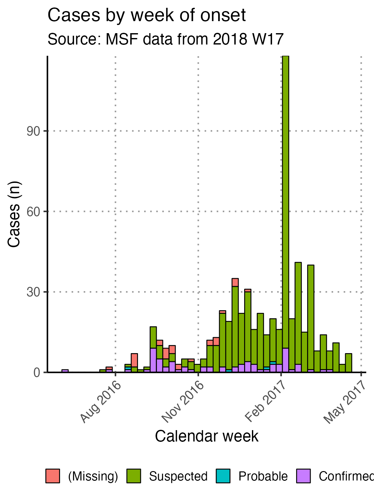
Remember also that you can limit the entire plot to a subset of observations by first filtering the dataset and passing the result to the ggplot() function, as is done in the above examples filtering to remove rows with a missing epiweek_date value.
Analysis of other indicators by time
The chunk attack_rate_per_week does not produce an epidemic curve, but does print a table of the the attack rate by week. This table could be very long if your epidemic is protracted, so you may choose to use a different unit of time than week.
# counts and cumulative counts by week
cases <- linelist_cleaned %>%
arrange(date_of_onset) %>% # arrange by date of onset
count(epiweek, .drop = FALSE) %>% # count all epiweeks and include zero counts
mutate(cumulative = cumsum(n)) # add a cumulative sum
# attack rate for each week
ar <- attack_rate(cases$n, population, multiplier = 10000) %>%
bind_cols(select(cases, epiweek), .) # add the epiweek column to table
ar %>%
merge_ci_df(e = 4) %>% # merge the lower and upper CI into one column
rename("Epiweek" = epiweek,
"Cases (n)" = cases,
"Population" = population,
"AR (per 10,000)" = ar,
"95%CI" = ci) %>%
# produce styled output table with auto-adjusted column widths with {flextable}
qflextable() %>%
# make header text bold (using {flextable})
bold(part = "header") %>%
# make your table fit to the maximum width of the word document
set_table_properties(layout = "autofit") %>%
## set to only show 1 decimal place
colformat_double(j = -1, digits = 1)Epiweek |
Cases (n) |
Population |
AR (per 10,000) |
95%CI |
2016 W23 |
1 |
62,336.0 |
0.2 |
(0.03--0.91) |
2016 W29 |
1 |
62,336.0 |
0.2 |
(0.03--0.91) |
2016 W30 |
2 |
62,336.0 |
0.3 |
(0.09--1.17) |
2016 W33 |
3 |
62,336.0 |
0.5 |
(0.16--1.42) |
2016 W34 |
7 |
62,336.0 |
1.1 |
(0.54--2.32) |
2016 W35 |
1 |
62,336.0 |
0.2 |
(0.03--0.91) |
2016 W36 |
2 |
62,336.0 |
0.3 |
(0.09--1.17) |
2016 W37 |
17 |
62,336.0 |
2.7 |
(1.70--4.37) |
2016 W38 |
12 |
62,336.0 |
1.9 |
(1.10--3.36) |
2016 W39 |
9 |
62,336.0 |
1.4 |
(0.76--2.74) |
2016 W40 |
10 |
62,336.0 |
1.6 |
(0.87--2.95) |
2016 W41 |
3 |
62,336.0 |
0.5 |
(0.16--1.42) |
2016 W42 |
5 |
62,336.0 |
0.8 |
(0.34--1.88) |
2016 W43 |
5 |
62,336.0 |
0.8 |
(0.34--1.88) |
2016 W44 |
3 |
62,336.0 |
0.5 |
(0.16--1.42) |
2016 W45 |
5 |
62,336.0 |
0.8 |
(0.34--1.88) |
2016 W46 |
12 |
62,336.0 |
1.9 |
(1.10--3.36) |
2016 W47 |
13 |
62,336.0 |
2.1 |
(1.22--3.57) |
2016 W48 |
23 |
62,336.0 |
3.7 |
(2.46--5.54) |
2016 W49 |
19 |
62,336.0 |
3.0 |
(1.95--4.76) |
2016 W50 |
35 |
62,336.0 |
5.6 |
(4.04--7.81) |
2016 W51 |
22 |
62,336.0 |
3.5 |
(2.33--5.34) |
2016 W52 |
31 |
62,336.0 |
5.0 |
(3.50--7.06) |
2017 W01 |
16 |
62,336.0 |
2.6 |
(1.58--4.17) |
2017 W02 |
22 |
62,336.0 |
3.5 |
(2.33--5.34) |
2017 W03 |
14 |
62,336.0 |
2.2 |
(1.34--3.77) |
2017 W04 |
20 |
62,336.0 |
3.2 |
(2.08--4.96) |
2017 W05 |
16 |
62,336.0 |
2.6 |
(1.58--4.17) |
2017 W06 |
118 |
62,336.0 |
18.9 |
(15.81--22.66) |
2017 W07 |
20 |
62,336.0 |
3.2 |
(2.08--4.96) |
2017 W08 |
41 |
62,336.0 |
6.6 |
(4.85--8.92) |
2017 W09 |
15 |
62,336.0 |
2.4 |
(1.46--3.97) |
2017 W10 |
40 |
62,336.0 |
6.4 |
(4.71--8.74) |
2017 W11 |
8 |
62,336.0 |
1.3 |
(0.65--2.53) |
2017 W12 |
14 |
62,336.0 |
2.2 |
(1.34--3.77) |
2017 W13 |
8 |
62,336.0 |
1.3 |
(0.65--2.53) |
2017 W14 |
11 |
62,336.0 |
1.8 |
(0.99--3.16) |
2017 W15 |
3 |
62,336.0 |
0.5 |
(0.16--1.42) |
2017 W16 |
7 |
62,336.0 |
1.1 |
(0.54--2.32) |
The next chunks offers a similar calculation, but for cumulative attack rate, and CFR
Plotting AR, CFR, and the Epidemic Curve togethr
These code chunks produce plots of the AR (in the population), CFR (among inpatients only), and the AF and CFR as line graphs together with the Epidemic Curve.
The chunk, ar_line_graph, prepares a plot of attack rate by epiweek, but does not yet print it. You can print it alone by running a command of its name ar_plot.
This ar_plot depends on you having already run the attack_rate_per_week chunk. If you have not, you may see “Error: epiweek not found”
Each of the plots involves several steps:
- Creating the data object e.g.
arorcfr
- Creating the plot e.g.
ar_plotorcfr_plot
The plots are finally combined with the {patchwork} package into one image.
The code below uses the ar object created above to produce and store the AR plot.
ar_plot <- ggplot(ar, aes(x = as.Date(epiweek), group = 1)) +
# add confidence intervals as a ribbon
geom_ribbon(aes(ymin = lower, ymax = upper),
color = "blue", fill = "blue",
linetype = 2, alpha = 0.2, show.legend = FALSE) +
# add AR as a line
geom_line(aes(y = ar), color = "blue", show.legend = FALSE) +
# set origin for axes
scale_y_continuous(expand = c(0, NA)) +
# control x-axis breaks and display
scale_x_date(
breaks = all_weeks_date,
labels = all_weeks) +
# add labels to axes and below chart
labs(x = "Calendar week", y = "AR [95% CI]", subtitle = "Attack Rate (per 10,000)") +
# change visuals of dates and remove legend title
epicurve_themeThen code is run to produce and store the CFR plot.
First we make cfr from the linelist_cleaned:
# calculate CFR among inpatients by week
cfr <- linelist_cleaned %>%
filter(patient_facility_type == "Inpatient") %>%
mutate(epiweek = as.character(epiweek)) %>%
case_fatality_rate_df(str_detect(exit_status, "Dead"), group = epiweek)Then we make the plot and save it as cfr_plot. Note that it is not yet printed.
cfr_plot <- ggplot(cfr, aes(x = as.Date(yearweek(as.character(epiweek)))), group = 1) +
# add confidence intervals as a ribbon
geom_ribbon(aes(ymin = lower, ymax = upper),
color = "red", fill = "red",
linetype = 2, alpha = 0.2, show.legend = FALSE) +
# add CFR as a line
geom_line(aes(y = cfr), color = "red", show.legend = FALSE) +
# set origin for axes
scale_y_continuous(expand = c(0, NA)) +
# control x-axis breaks and display
scale_x_date(
breaks = all_weeks_date,
labels = all_weeks) +
# add labels to axes and below chart
labs(x = "Calendar week", y = "CFR [95% CI]",
subtitle = "Case Fatality Ratio [95% CI] Among Inpatients") +
# change visuals of dates and remove legend title
epicurve_theme +
scale_x_date(breaks = "3 months", date_labels = "%b %Y")To create a combination visualisation, we must adjust some final setting for the x-axes.
no_x <- theme(axis.text.x = element_blank(),
axis.title.x = element_blank())And finally we plot the Epidemic Curve, the AR plot, and the CFR plot all over each other.
## use patchwork to stack the three plots on top of one another
(basic_curve + no_x) / (ar_plot + no_x) / cfr_plot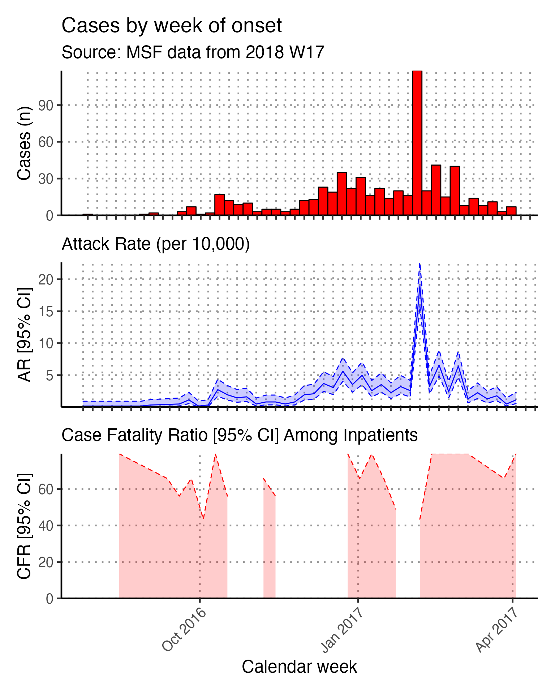
Place
The final section of the template produces tabular analysis outputs related to place. If you have shapefiles for your situation, you can also produce maps.
Tabular place analyses (non-maps)
To get a basic descriptive table of cases by region (which in our case was originally the variable quartier from the raw linelist), we use tbl_cross() function from {gtsummary} on the columns patient_origin and patient_facility_type (inpatient, outpatient, or missing).
linelist_cleaned %>%
tbl_cross(
row = patient_origin,
col = patient_facility_type,
percent = "column",
label = list(patient_origin = "Region",
patient_facility_type = "Facility type")
) %>%
## make variable names bold
bold_labels() %>%
# change to flextable format
as_flex_table() %>%
# make header text bold (using {flextable})
bold(part = "header") %>%
# make your table fit to the maximum width of the word document
set_table_properties(layout = "autofit")
|
Facility type |
|
||
Inpatient |
Outpatient |
Unknown |
Total |
|
Region |
||||
ABLELAYE |
2 (3.4%) |
1 (0.2%) |
1 (2.0%) |
4 (0.7%) |
ADAMRE |
2 (3.4%) |
10 (2.0%) |
1 (2.0%) |
13 (2.1%) |
AFFOUSSE |
1 (1.7%) |
1 (0.2%) |
0 (0%) |
2 (0.3%) |
AL ALAK |
0 (0%) |
1 (0.2%) |
0 (0%) |
1 (0.2%) |
AL MIDODIL |
1 (1.7%) |
0 (0%) |
0 (0%) |
1 (0.2%) |
AL-FRECHE |
1 (1.7%) |
0 (0%) |
0 (0%) |
1 (0.2%) |
AL-HOUGNA |
0 (0%) |
9 (1.8%) |
3 (6.1%) |
12 (2.0%) |
AL-MOURA |
1 (1.7%) |
0 (0%) |
0 (0%) |
1 (0.2%) |
ALBAYADI |
1 (1.7%) |
0 (0%) |
0 (0%) |
1 (0.2%) |
ALBOUKHASS |
0 (0%) |
4 (0.8%) |
2 (4.1%) |
6 (1.0%) |
ALKASSÉ |
3 (5.1%) |
11 (2.2%) |
2 (4.1%) |
16 (2.6%) |
AM BADARO 1 |
0 (0%) |
1 (0.2%) |
0 (0%) |
1 (0.2%) |
AM-DOUMA |
0 (0%) |
1 (0.2%) |
0 (0%) |
1 (0.2%) |
AMBARITE |
0 (0%) |
2 (0.4%) |
1 (2.0%) |
3 (0.5%) |
AMCHOKA |
1 (1.7%) |
0 (0%) |
0 (0%) |
1 (0.2%) |
AMDJALAT |
0 (0%) |
2 (0.4%) |
0 (0%) |
2 (0.3%) |
AMSINENE |
1 (1.7%) |
3 (0.6%) |
0 (0%) |
4 (0.7%) |
ANALA |
2 (3.4%) |
2 (0.4%) |
2 (4.1%) |
6 (1.0%) |
ANFANDOCK |
4 (6.8%) |
18 (3.6%) |
0 (0%) |
22 (3.6%) |
ANGUITEI |
0 (0%) |
0 (0%) |
1 (2.0%) |
1 (0.2%) |
ARDO |
2 (3.4%) |
1 (0.2%) |
0 (0%) |
3 (0.5%) |
ATOUA |
1 (1.7%) |
1 (0.2%) |
0 (0%) |
2 (0.3%) |
BADINA |
0 (0%) |
1 (0.2%) |
0 (0%) |
1 (0.2%) |
BIR TAGAL |
0 (0%) |
1 (0.2%) |
0 (0%) |
1 (0.2%) |
COMMERCANT |
0 (0%) |
3 (0.6%) |
0 (0%) |
3 (0.5%) |
COUBO ABNIMIR |
0 (0%) |
1 (0.2%) |
0 (0%) |
1 (0.2%) |
DARASALAM |
0 (0%) |
19 (3.8%) |
2 (4.1%) |
21 (3.4%) |
DELEBAE |
1 (1.7%) |
1 (0.2%) |
0 (0%) |
2 (0.3%) |
DIFFIR |
2 (3.4%) |
1 (0.2%) |
0 (0%) |
3 (0.5%) |
DIJEKHINÉ |
1 (1.7%) |
0 (0%) |
0 (0%) |
1 (0.2%) |
DILEMA |
3 (5.1%) |
13 (2.6%) |
4 (8.2%) |
20 (3.3%) |
DINGUESS |
1 (1.7%) |
2 (0.4%) |
1 (2.0%) |
4 (0.7%) |
DJAMBALBAHAR |
0 (0%) |
7 (1.4%) |
0 (0%) |
7 (1.1%) |
GANATIR |
3 (5.1%) |
85 (17%) |
7 (14%) |
95 (15%) |
GANATIR 1 |
0 (0%) |
1 (0.2%) |
0 (0%) |
1 (0.2%) |
GANATIR 2 |
0 (0%) |
5 (1.0%) |
0 (0%) |
5 (0.8%) |
GARDOLE |
0 (0%) |
1 (0.2%) |
0 (0%) |
1 (0.2%) |
GOURMOUDAY |
0 (0%) |
1 (0.2%) |
0 (0%) |
1 (0.2%) |
GOZ DJARAT |
1 (1.7%) |
0 (0%) |
0 (0%) |
1 (0.2%) |
GOZ MABILE |
1 (1.7%) |
3 (0.6%) |
0 (0%) |
4 (0.7%) |
GOZ MABILE 2 |
1 (1.7%) |
4 (0.8%) |
1 (2.0%) |
6 (1.0%) |
GOZ-TAMADJA |
1 (1.7%) |
0 (0%) |
0 (0%) |
1 (0.2%) |
HILE BARA |
2 (3.4%) |
11 (2.2%) |
0 (0%) |
13 (2.1%) |
HILE ODAA |
0 (0%) |
1 (0.2%) |
0 (0%) |
1 (0.2%) |
HIMEDA |
0 (0%) |
1 (0.2%) |
0 (0%) |
1 (0.2%) |
IDETER |
0 (0%) |
1 (0.2%) |
0 (0%) |
1 (0.2%) |
KACHKACHA |
2 (3.4%) |
0 (0%) |
0 (0%) |
2 (0.3%) |
MATAR |
0 (0%) |
2 (0.4%) |
0 (0%) |
2 (0.3%) |
MINA |
2 (3.4%) |
2 (0.4%) |
2 (4.1%) |
6 (1.0%) |
MIRÉKIKE |
1 (1.7%) |
0 (0%) |
0 (0%) |
1 (0.2%) |
MIRER |
1 (1.7%) |
0 (0%) |
0 (0%) |
1 (0.2%) |
PEDIS |
0 (0%) |
1 (0.2%) |
0 (0%) |
1 (0.2%) |
RASSALFIL |
2 (3.4%) |
4 (0.8%) |
0 (0%) |
6 (1.0%) |
RIAD |
1 (1.7%) |
29 (5.7%) |
0 (0%) |
30 (4.9%) |
RIDINA |
0 (0%) |
59 (12%) |
4 (8.2%) |
63 (10%) |
RIDINA 1 |
0 (0%) |
1 (0.2%) |
0 (0%) |
1 (0.2%) |
RIDINA 2 |
0 (0%) |
3 (0.6%) |
2 (4.1%) |
5 (0.8%) |
SALAMAT |
1 (1.7%) |
19 (3.8%) |
2 (4.1%) |
22 (3.6%) |
SIHEBA |
1 (1.7%) |
0 (0%) |
0 (0%) |
1 (0.2%) |
TARADONA |
1 (1.7%) |
106 (21%) |
4 (8.2%) |
111 (18%) |
TARADONA 1 |
1 (1.7%) |
9 (1.8%) |
2 (4.1%) |
12 (2.0%) |
TARADONA 2 |
5 (8.5%) |
25 (4.9%) |
1 (2.0%) |
31 (5.0%) |
TARADONA 3 |
0 (0%) |
6 (1.2%) |
3 (6.1%) |
9 (1.5%) |
ZONGO |
0 (0%) |
3 (0.6%) |
0 (0%) |
3 (0.5%) |
Unknown |
1 (1.7%) |
6 (1.2%) |
1 (2.0%) |
8 (1.3%) |
Total |
59 (100%) |
506 (100%) |
49 (100%) |
614 (100%) |
A table of attack rates by region may be useful, and is produced in the chunk attack_rate_by_region.
First, like when we calculated attack rate by epiweek in the time_analysis section, the cases are counted by patient_origin. This list of counts is then joined to the imported population data for each region by patient_origin (the name of the region/quartier). These data are stored in the object cases.
Recall that this join requires exact matches between patient_origin values in linelist_cleaned$patient_origin and population_data_region$patient_origin to match a region’s cases to its population. In the data cleaning steps we converted the values in linelist_cleaned to all capital letters to match those in population_data_region.
# count cases by region
cases <- linelist_cleaned %>%
count(patient_origin) %>%
# add in population data
left_join(population_data_region, by = "patient_origin")
# calculate attack rate for region
ar_region <- attack_rate(cases$n, cases$population, multiplier = 10000) %>%
# add the region column to table
bind_cols(select(cases, patient_origin), .) %>%
rename("Region" = patient_origin,
"Cases (n)" = cases,
"Population" = population,
"AR (per 10,000)" = ar,
"Lower 95%CI" = lower,
"Upper 95%CI" = upper)
ar_region %>%
merge_ci_df(e = 4) %>% # merge lower and upper CI in to one column
rename("95%CI" = ci) %>% # rename single 95%CI column
# produce styled output table with auto-adjusted column widths with {flextable}
qflextable() %>%
# make header text bold (using {flextable})
bold(part = "header") %>%
# make your table fit to the maximum width of the word document
set_table_properties(layout = "autofit") %>%
## set to only show 1 decimal place
colformat_double(digits = 1)Region |
Cases (n) |
Population |
AR (per 10,000) |
95%CI |
ABLELAYE |
4 |
(NA--NA) |
||
ADAMRE |
13 |
(NA--NA) |
||
AFFOUSSE |
2 |
(NA--NA) |
||
AL ALAK |
1 |
(NA--NA) |
||
AL MIDODIL |
1 |
(NA--NA) |
||
AL-FRECHE |
1 |
(NA--NA) |
||
AL-HOUGNA |
12 |
(NA--NA) |
||
AL-MOURA |
1 |
(NA--NA) |
||
ALBAYADI |
1 |
(NA--NA) |
||
ALBOUKHASS |
6 |
(NA--NA) |
||
ALKASSÉ |
16 |
(NA--NA) |
||
AM BADARO 1 |
1 |
(NA--NA) |
||
AM-DOUMA |
1 |
(NA--NA) |
||
AMBARITE |
3 |
(NA--NA) |
||
AMCHOKA |
1 |
(NA--NA) |
||
AMDJALAT |
2 |
(NA--NA) |
||
AMSINENE |
4 |
(NA--NA) |
||
ANALA |
6 |
(NA--NA) |
||
ANFANDOCK |
22 |
(NA--NA) |
||
ANGUITEI |
1 |
(NA--NA) |
||
ARDO |
3 |
(NA--NA) |
||
ATOUA |
2 |
(NA--NA) |
||
BADINA |
1 |
(NA--NA) |
||
BIR TAGAL |
1 |
(NA--NA) |
||
COMMERCANT |
3 |
(NA--NA) |
||
COUBO ABNIMIR |
1 |
(NA--NA) |
||
DARASALAM |
21 |
(NA--NA) |
||
DELEBAE |
2 |
(NA--NA) |
||
DIFFIR |
3 |
(NA--NA) |
||
DIJEKHINÉ |
1 |
(NA--NA) |
||
DILEMA |
20 |
(NA--NA) |
||
DINGUESS |
4 |
2,268.0 |
17.6 |
(6.86--45.26) |
DJAMBALBAHAR |
7 |
(NA--NA) |
||
GANATIR |
95 |
(NA--NA) |
||
GANATIR 1 |
1 |
(NA--NA) |
||
GANATIR 2 |
5 |
(NA--NA) |
||
GARDOLE |
1 |
2,286.0 |
4.4 |
(0.77--24.74) |
GOURMOUDAY |
1 |
(NA--NA) |
||
GOZ DJARAT |
1 |
(NA--NA) |
||
GOZ MABILE |
4 |
(NA--NA) |
||
GOZ MABILE 2 |
6 |
3,086.0 |
19.4 |
(8.91--42.36) |
GOZ-TAMADJA |
1 |
(NA--NA) |
||
HILE BARA |
13 |
(NA--NA) |
||
HILE ODAA |
1 |
(NA--NA) |
||
HIMEDA |
1 |
(NA--NA) |
||
IDETER |
1 |
(NA--NA) |
||
KACHKACHA |
2 |
(NA--NA) |
||
MATAR |
2 |
569.0 |
35.1 |
(9.64--127.24) |
MINA |
6 |
(NA--NA) |
||
MIRÉKIKE |
1 |
(NA--NA) |
||
MIRER |
1 |
(NA--NA) |
||
PEDIS |
1 |
(NA--NA) |
||
RASSALFIL |
6 |
(NA--NA) |
||
RIAD |
30 |
6,073.0 |
49.4 |
(34.63--70.43) |
RIDINA |
63 |
(NA--NA) |
||
RIDINA 1 |
1 |
2,336.0 |
4.3 |
(0.76--24.21) |
RIDINA 2 |
5 |
3,734.0 |
13.4 |
(5.72--31.31) |
SALAMAT |
22 |
(NA--NA) |
||
SIHEBA |
1 |
(NA--NA) |
||
TARADONA |
111 |
(NA--NA) |
||
TARADONA 1 |
12 |
6,484.0 |
18.5 |
(10.59--32.32) |
TARADONA 2 |
31 |
5,250.0 |
59.0 |
(41.63--83.69) |
TARADONA 3 |
9 |
5,416.0 |
16.6 |
(8.75--31.55) |
ZONGO |
3 |
1,607.0 |
18.7 |
(6.35--54.74) |
8 |
(NA--NA) |
You could then also plot this on a bar chart with confidence intervals.
ar_region %>%
drop_na(`AR (per 10,000)`) %>%
ggplot(aes(x = reorder(Region, `AR (per 10,000)`),
y = `AR (per 10,000)`)) +
# plot as bars (identity = as is)
geom_bar(stat = "identity", col = "black", fill = "red") +
# add CIs
geom_errorbar(aes(ymin = `Lower 95%CI`, ymax = `Upper 95%CI`), width = 0.2) +
# set origin for axes
scale_y_continuous(expand = c(0,0)) +
# add labels to axes and below chart
labs(x = "Region", y = "AR (per 10,000)",
captions = str_glue("Source: MSF data from {reporting_week}")) +
epicurve_theme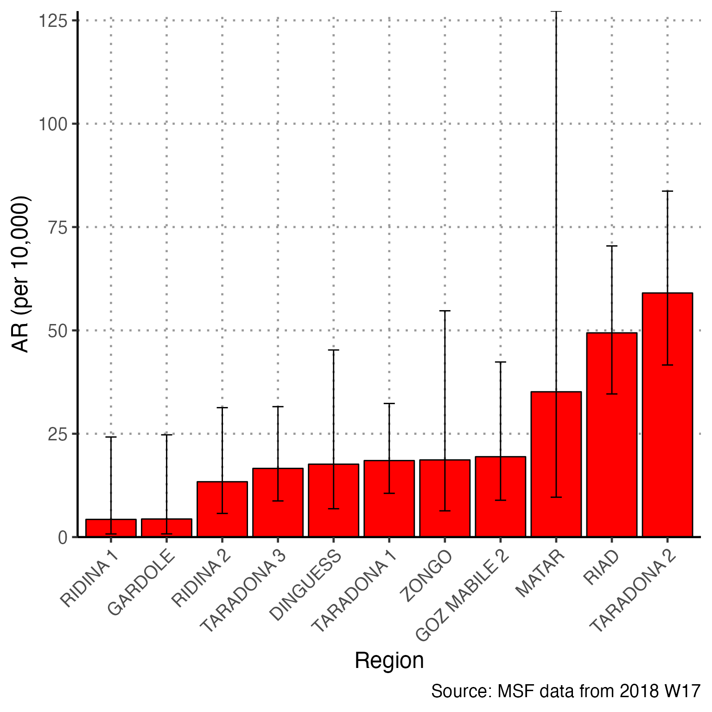
Note that there were many quartiers without population denominators that make the graph difficult to read. Thus, **we modified the code by filtering ar_region with drop_na() to remove these. Now any quartiers with missing denominators will not appear in the graph.
# filter ar for non-zero quartiers
ar_region <- filter(ar_region, !is.na(`AR (per 10,000)`))
# plot with the region on the x axis sorted by increasing ar
# ar value on the y axis
ggplot(ar_region, aes(x = reorder(Region, `AR (per 10,000)`),
y = `AR (per 10,000)`)) +
geom_bar(stat = "identity", col = "black", fill = "red") + # plot as bars (identity = as is)
geom_errorbar(aes(ymin = `Lower 95%CI`, ymax = `Upper 95%CI`), width = 0.2) + # add CIs
scale_y_continuous(expand = c(0,0)) + # set origin for axes
# add labels to axes and below chart
labs(x = "Region", y = "AR (per 10,000)",
captions = str_glue("Source: MSF data from {reporting_week}")) +
epicurve_themeA similar analysis can be done to show mortality rates (be sure to use exit_status2!)
Maps
Mapping in R can be intimidating at first because it is different than ArcGIS, QGIS, or other mapping software that primarily use a point-and-click interface. However, you will see that using commands to create maps can be much faster, more replicable, and transparent for whomever you share code with.
*Shapefiles are a format for storing geometric location and attribute data for geographic features - for example **either points (e.g. GPS points of cases or households surveyed), lines (e.g. road network), or polygons (e.g. district boundaries)*
We do have shapefiles for the Am Timan exercise. The shapefile for the quartiers is accessible from within the {sitrep} R package by running the following command:
# saves shapefile stored in R package as "map"
map <- shape_quartier_internalA shapefile is actually made of several files. Viewing the shapefile in your computer’s internal folders you will often see 4 or 5 files with the same name but different extensions (e.g. .shp, .prj, etc.). As long as these files are located in the same folder the shapefile will load correctly when you import with the .shp extension.
Because we have shapefiles for this exercise, we must delete the command that generates the fake shapefile
map <- gen_polygon(regions = unique(linelist_cleaned$patient_origin))
Note the checklist for using shapefiles:
- Your shapefile can be a polygon or points (polygons do not have to be contiguous - they do not have to touch each other)
- Ensure that the region names in the shapefile match exactly the region names in
linelist_cleaned(in most shapefiles there is an ID or NAME variable in the spreadsheet file)
- Make sure the coordinate reference system (CRS) of the shapefile is WGS84 (this is the standard coordinate system used by most GPS systems, but it is good to ask whomever collected to data to be sure)
When giving the name of a shapefile to here(), list the file name with a .shp extension.
A generic example of importing a shapefile might look like this:
## reading in a shapefile
map <- read_sf(here("my_map_folder", "Quartiersshape.shp"))The next code will check the coordinate reference system (CRS) of the shapefile, as it was read-in. In our exercise, we see an EPSG code of 4326, which is the correct code for WGS84 (you can also see below the EPSG code that the datum is WGS84).
## check the coordinate reference system (CRS)
st_crs(map)
#> Coordinate Reference System:
#> User input: WGS 84
#> wkt:
#> GEOGCRS["WGS 84",
#> DATUM["World Geodetic System 1984",
#> ELLIPSOID["WGS 84",6378137,298.257223563,
#> LENGTHUNIT["metre",1]]],
#> PRIMEM["Greenwich",0,
#> ANGLEUNIT["degree",0.0174532925199433]],
#> CS[ellipsoidal,2],
#> AXIS["latitude",north,
#> ORDER[1],
#> ANGLEUNIT["degree",0.0174532925199433]],
#> AXIS["longitude",east,
#> ORDER[2],
#> ANGLEUNIT["degree",0.0174532925199433]],
#> ID["EPSG",4326]]If there is no CRS specified for your shapefile, you can set the CRS to WGS84 with the following command, which uses the EPSG code of 4326.
## set the CRS if not present using EPSG value
## this is the most commonly used
map <- st_set_crs(map, value = 4326) # Sets to WGS84Attack rate map
These commands reference the ar_region table prepared in previous sections of the report, which contains region names, number of cases, populaton AR, and 95%CI.
Create categories of ARs by region
Create a categorical variable of the attack rate. These categories will appear in the map as the legend - and the regions will be colored by these groups.
The first command defines
max_aras the highest attack rate value in the objectar_region. This is referenced later.In the next command,
breakersis defined as a sequence of integers. Zero is included by default because it should be a separate color on the final map. After zero, quartiles are determined up to themax_arusing the {sitrep} functionfind_breaks().In the last command,
mutate()is used to makear_map(a copyar_region), and add thecategoriesvariable. This variable is created usingbreakersto define the breaks in the numeric variableAR (per 10,000).
# save the maximum AR in the ar_region table
max_ar <- max(ar_region$`Upper 95%CI`, na.rm = TRUE)
# create groups - one group will be 0 only, then up to 4 more groups evenly
# divided to maximum
breakers <- as.integer(c(
# include zero as a standalone group
0,
# 1 to 4 divisions, snapping the boundaries to the nearest 100
find_breaks(n = max_ar, breaks = 4, snap = 100)
))
## create a categorical variable using the age_categories function
## (we aren't using ages - but it functions the same way!)
ar_map <- mutate(ar_region,
categories = age_categories(`AR (per 10,000)`,
breakers = breakers))Join the table to the shapefile
Join the object map (shapefile) to ar_map (a data frame). The spatial object map is joined to the data frame ar_map with a left join. Both of these objects contain tables (you can click them in the Environment pane to see this). In the command, they are linked by the Name variable in ar and the Region variable in map.
You may need to modify your code so that the join occurs on Name in the object map, and not name.
## Join table to shapefile -----------------------------------------------------
mapsub <- left_join(map, ar_map, by = c("Name" = "Region"))Make sure you modify your left_join code to use “Name” with a capital N, as that is how the variable is spelled in the object ‘map’. In your other data these variable names may be completely different and must be changed
The resulting object mapsub is a product of this left join. A left join will include all values from the Left-hand Side (LHS) and only include values from the Right-hand Side (RHS) if they match to LHS values. Now, the attack rates are joined to the region names and to their GIS geometries. You can verify this by Viewing the object mapsub (click on it in the Environment pane).
Plot cases or AR by region
Now, ggplot() is used to create the map. Remember that ggplot() subcommands must be connected by plus symbols at the end of each line (+) (except the last line). Read more about ggplot2 and ggplot() in the Advanced R Basics page.
geom_sf() identifies mapsub as providing the data for the map, and filling the polygons by values in the variable categories.
coord_sf() set to NA prevents gridlines from being drawn on the map.
annotation_scale() adds a scalebar at the bottom of the map.
scale_fill_brewer() uses a color palatte from orange to red (“OrRd”), keeps all color levels even if there are no polygons at that level (drop=FALSE), and specifies a title for the legend. If you want a different color scale, use this code from the package RColorBrewer to see the possible options (hint: after running this code click “Zoom” in your Plot/Viewer pane to see more clearly). Then replace “OrRd” with your desired code. You can read more about colors here.
library(RColorBrewer)
display.brewer.all()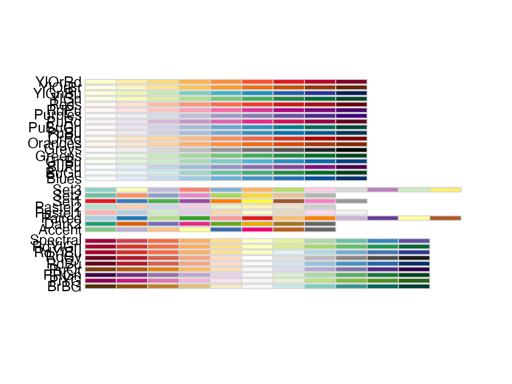
geom_sf_text() specifies labels for the polygons, including which variable to use for labels (Name), and the text colour. Again, we need to modify this ggplot() reference to the variable “name” to now reference “Name” with a capital N. In your other data the variable may be completely different.
theme_void() specifies a theme for the map that does not include coordinates or axes.
## you could also fill by cases using `Cases (n)` in the fill option instead of `AR (per 10,000)`
ggplot() +
# shapefile as polygon
geom_sf(data = mapsub, aes(fill = categories), col = "grey50") +
# needed to avoid gridlines being drawn
coord_sf(datum = NA) +
# add a scalebar
annotation_scale() +
# color the scale to be perceptually uniform
# drop FALSE keeps all levels
# name allows you to change the legend title
scale_fill_brewer(drop = FALSE, palette = "OrRd", name = "AR (per 10,000)") +
# label polygons
geom_sf_text(data = mapsub, aes(label = Name), colour = "grey50", size = 2) +
# remove coordinates and axes
theme_void() 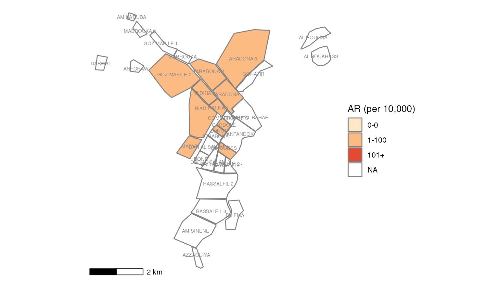
You can use this alternative to make the labels not overlap.
ggrepel() arranges point/polygon labels so they do not overlap and are easier to read. You can see more examples of ggrepel() in this vignette
The geom_sf_text() line has been replaced by ggrepel.
## plotting with polygons ------------------------------------------------------
ggplot() +
geom_sf(data = mapsub, aes(fill = categories), col = "grey50") + # shapefile as polygon
coord_sf(datum = NA) + # needed to avoid gridlines being drawn
annotation_scale() + # add a scalebar
scale_fill_brewer(drop = FALSE, palette = "OrRd", name = "AR (per 10,000)") +
# Optional ggrepel section to make labels appear more nicely
ggrepel::geom_label_repel(data = mapsub, aes(label = Name, geometry = geometry),
stat = "sf_coordinates",
min.segment.length = 0) +
theme_void() # remove coordinates and axes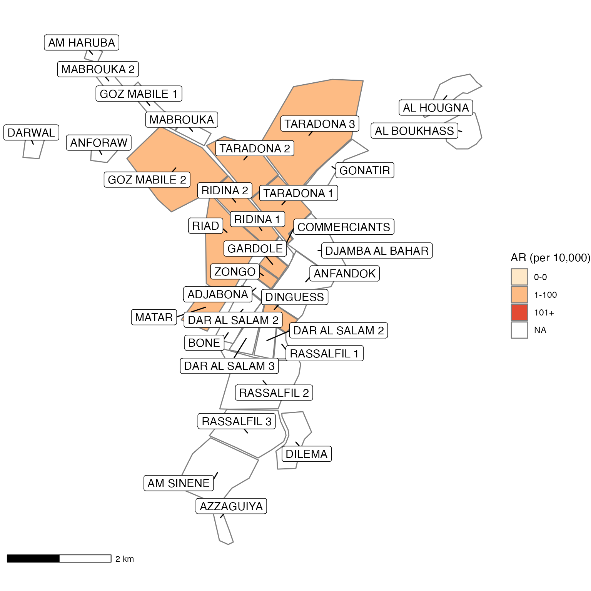
Map iteration
Lastly, there is an efficient way to create attack rate maps and bar plots of incidence for each epiweek. In this case, we want to make the map and bar chart for each region. You can read more about iteration in the Epidemiologist R Handbook chapter Iteration, Loops, and Lists.
A few things to note about this chunk:
- The first half is very similar to the set-up of the previous map.
- You must also modify the
left_joincommand to list the correct variable names (e.g. modify to join onNameinstead ofname) - These maps are not labeled with region names.
- The creation of the barplots depends on the object
epicurve_theme, which was defined in the Time section of the template. If that section is not created, then this object will be missing and cause errors.
First we run preparation code that should look very familiar to the steps above.
## Prepare data ---------------------------------------------------------------
# change region variable to a factor so that zero counts can be included
linelist_cleaned$patient_origin <- as.factor(linelist_cleaned$patient_origin)
# case counts
cases <- linelist_cleaned %>%
group_by(epiweek) %>%
count(patient_origin, .drop = FALSE) %>% # cases for each week by region
left_join(population_data_region, by = "patient_origin") # merge population data
# attack rate for region
ar <- attack_rate(cases$n, cases$population, multiplier = 10000) %>%
# add the region column to table
bind_cols(select(cases, epiweek, patient_origin), .) %>%
rename("Region" = patient_origin,
"Cases (n)" = cases,
"Population" = population,
"AR (per 10,000)" = ar,
"Lower 95%CI" = lower,
"Upper 95%CI" = upper)
## define the last 10 weeks available in your dataset
which_weeks <- tail(unique(cases$epiweek), n = 10)
## only keep the last four weeks of data
ar <- ar %>%
filter(epiweek %in% which_weeks)
# define the maximum number of cases / max AR for the color palette
max_cases <- max(cases$n, na.rm = TRUE)
max_ar <- max(ar$`Upper 95%CI`, na.rm = TRUE)
# define breaks for standardising color palette
breakers <- as.integer(c(0, # include zero as a standalone group
find_breaks(max_ar, breaks = 4, snap = 25) # four breaks rounded to nearest 25
))
# add a categorical variable for AR
# (replace with `Cases (n)` if you want to map cases)
ar <- mutate(ar,
categories = age_categories(`AR (per 10,000)`,
breakers = breakers))Now, we can use the {purrr} package to iterate (repeat a process many times). For each week in the final 10 weeks of the outbreak, we left join the attack rate and the shapefile. Then we create a map, create a barplot, and combine the two plots together.
# go through each epiweek, filter and plot the data
purrr::walk(.x = which_weeks,
.f = ~{
this_ar <- filter(ar, epiweek == yearweek(.x))
## map
mapsub <- left_join(map, this_ar, by = c("Name" = "Region"))
## choropleth
map_plot <- ggplot() +
## shapefile as polygon
geom_sf(data = mapsub, aes(fill = categories), col = "grey50") +
## needed to avoid gridlines being drawn
coord_sf(datum = NA) +
## add a scalebar
annotation_scale() +
## color the scale to be perceptually uniform (keep levels)
scale_fill_brewer(drop = FALSE,
palette = "OrRd",
name = "AR (per 10,000)") +
## remove coordinates and axes
theme_void()
## plot with the region on the x axis sorted by increasing ar
## ar value on the y axis
barplot <- this_ar %>%
# Filter values in this_ar to only show quartiers with attack rates > 0 in barplot
filter(`AR (per 10,000)` > 0) %>%
# make plot
ggplot(aes(x = reorder(Region, `AR (per 10,000)`),
y = `AR (per 10,000)`)) +
## plot as bars (identity = as is)
geom_col(col = "black", fill = "red") +
## add CIs
geom_errorbar(aes(ymin = `Lower 95%CI`, ymax = `Upper 95%CI`), width = 0.2) +
## set origin for axes
scale_y_continuous(expand = c(0, 0), limits = c(0, max_ar)) +
## add labels to axes and below chart
labs(x = "Region", y = "AR (per 10,000)") +
epicurve_theme
## combine the barplot and map plot into one with patchwork and add a title
## in the top-left corner and a caption in the bottom-right
print(
barplot + map_plot + plot_annotation(
title = str_glue("Epiweek: {.x}"),
caption = str_glue("Source: MSF data from {reporting_week}")
)
)
})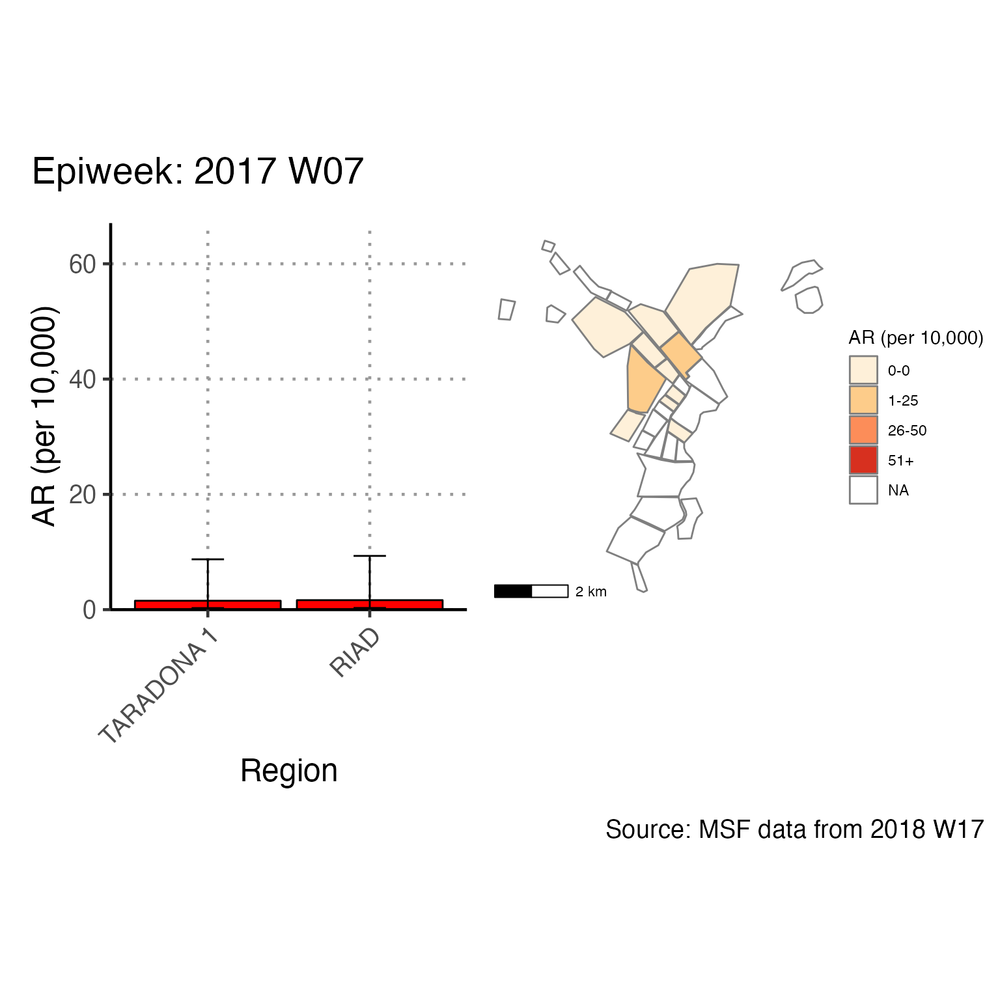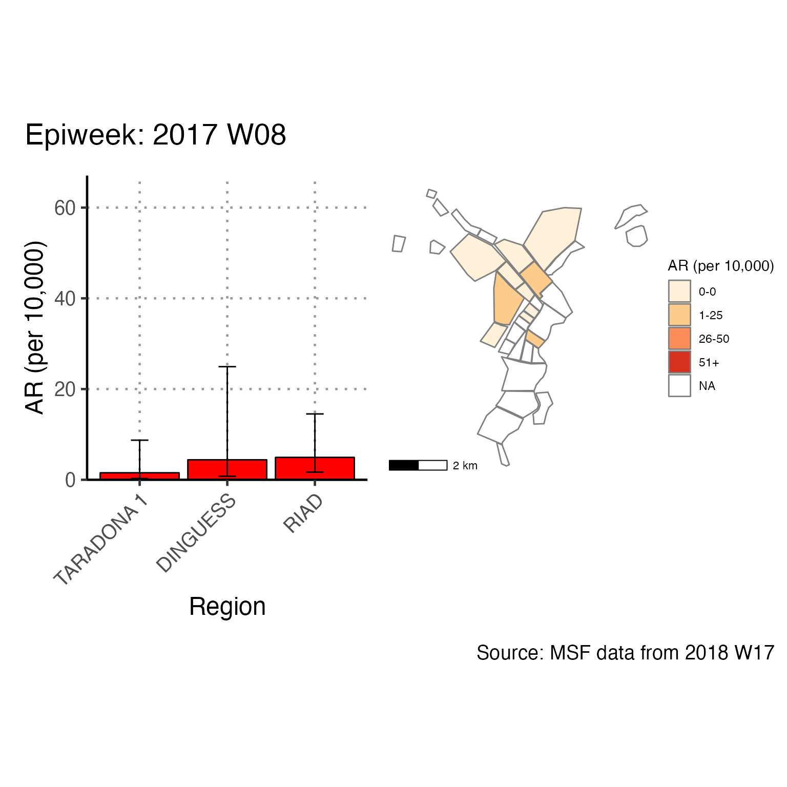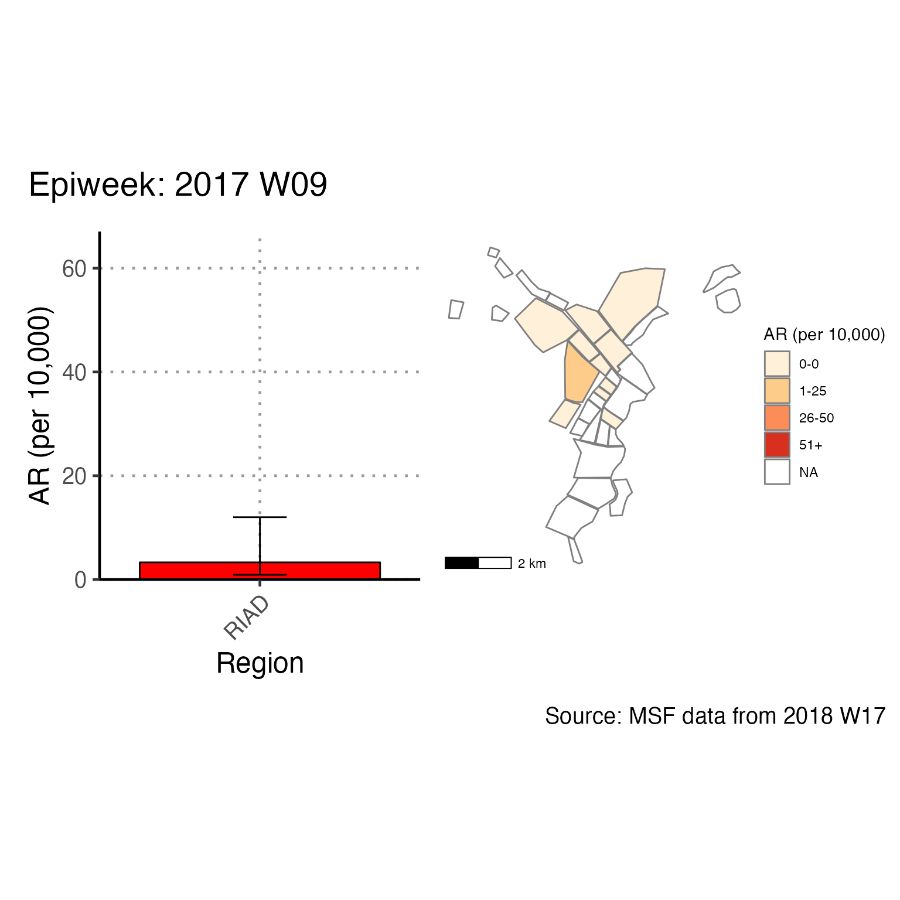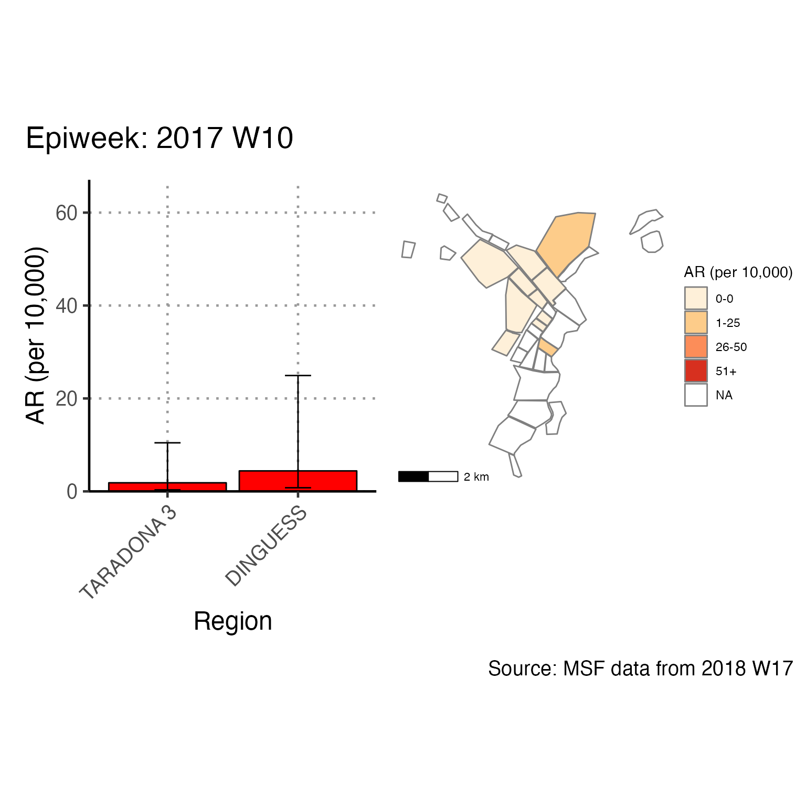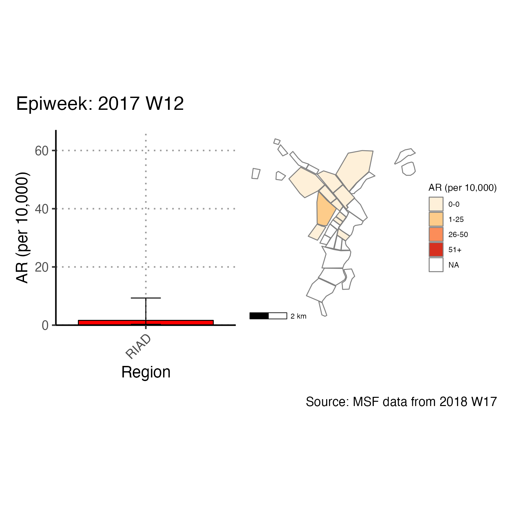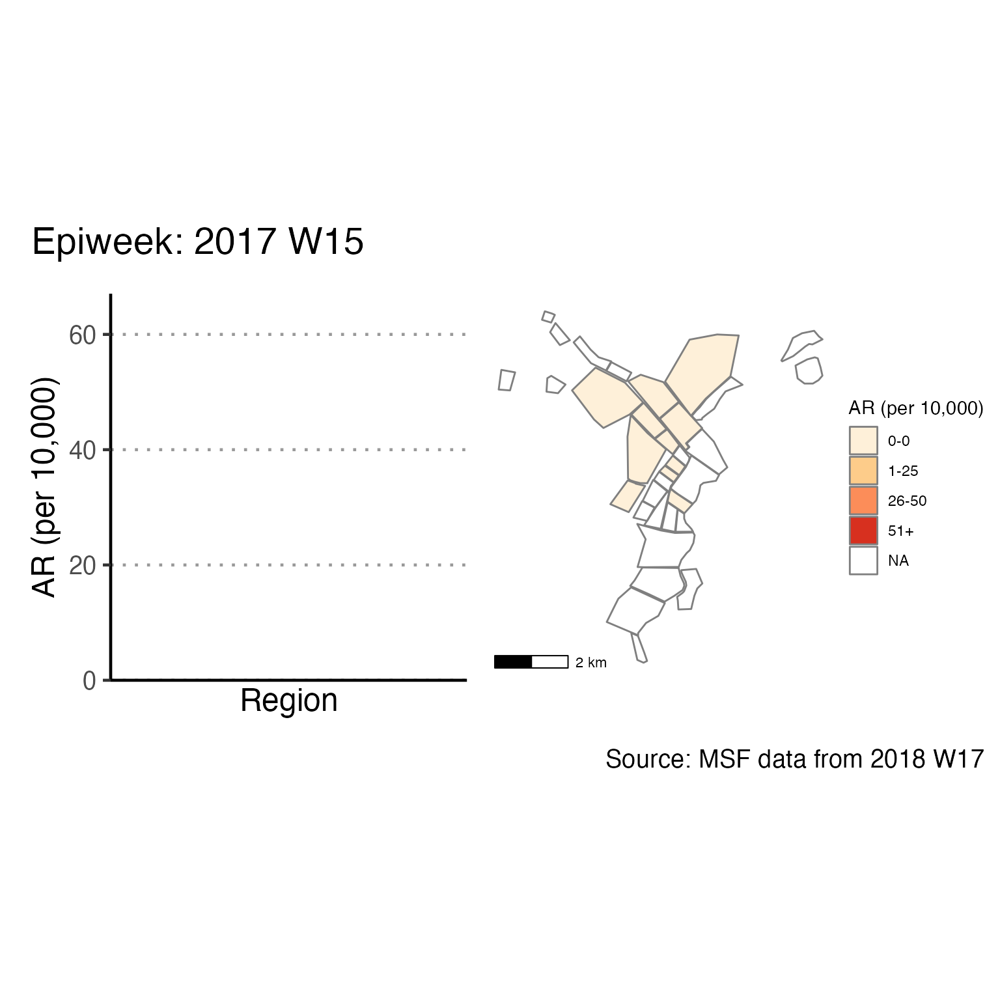